本页是 408 计算机组成原理（45 分）7 章全解：系统概述、数据表示与运算、存储系统、指令系统、CPU、总线、I/O 系统。Cache 映射、IEEE 754、流水线冒险、总线仲裁等难点配有图解卡，章末含例题卡与真题面板。
408 计算机组成原理
第1章 计算机系统概述
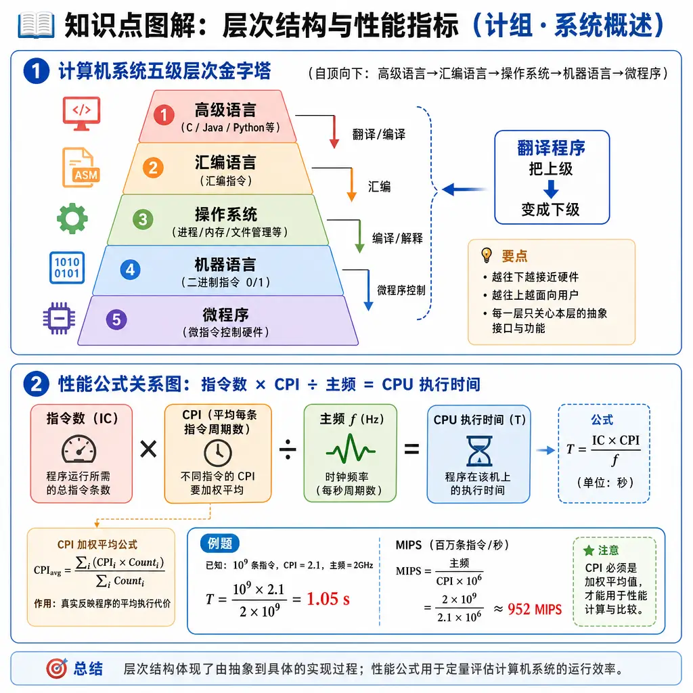
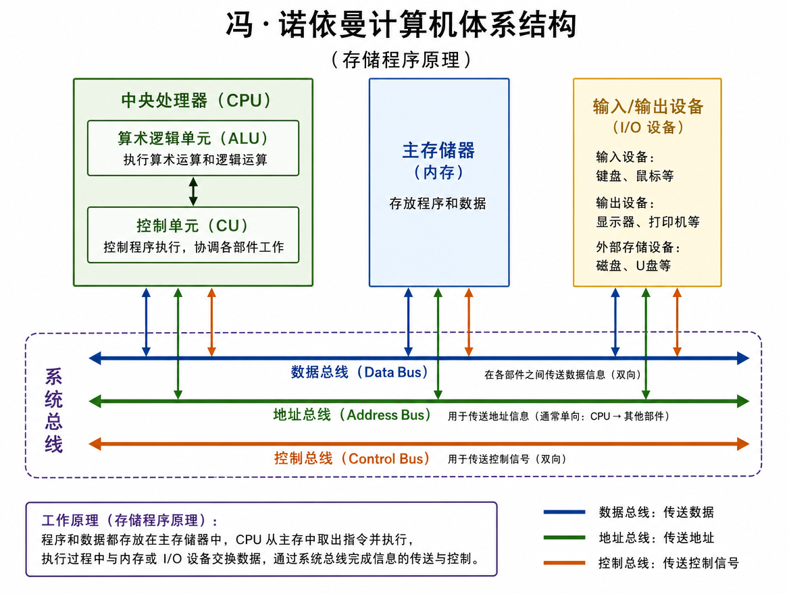
【分值占比】约 2~4 分
【考频】⭐⭐（低频，但贯穿全书）
【必背】
- 计算机系统的层次结构（自底向上）：微程序机器 → 机器语言 → 操作系统 → 汇编语言 → 高级语言
- 冯·诺依曼机基本特点：五大部件、存储程序、按地址访问、二进制表示
- 计算机性能指标：CPU时钟周期、主频、CPI、MIPS、MFLOPS
- 吞吐率、响应时间、CPU执行时间
【核心概念】
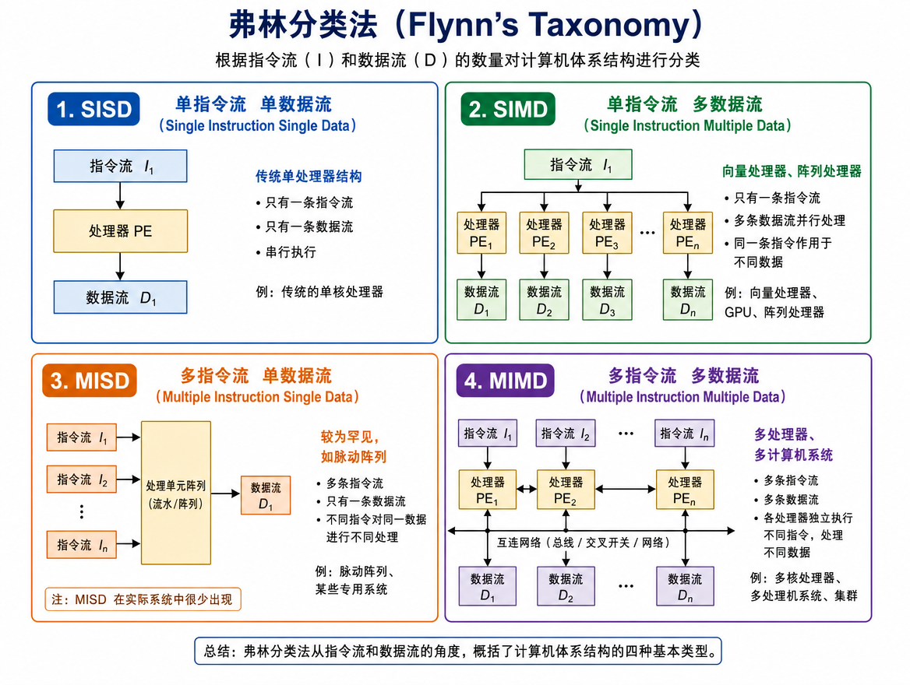
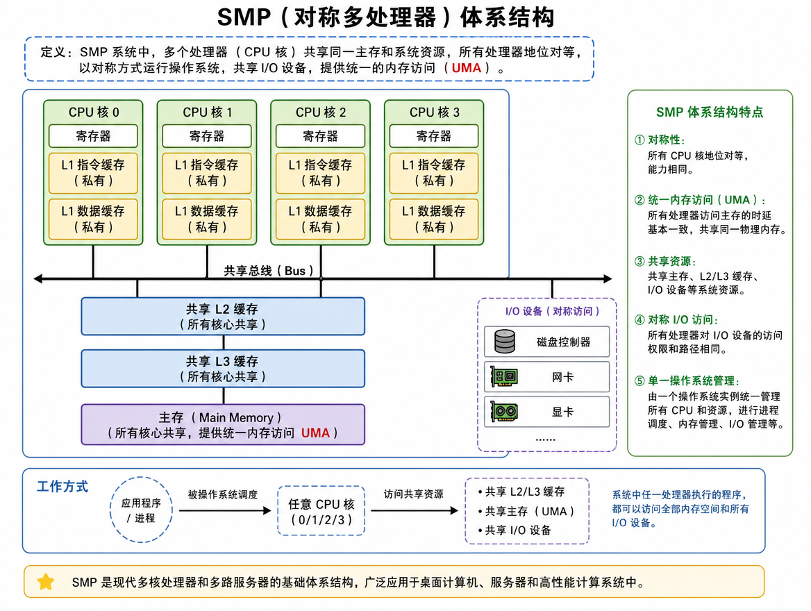
1.1 计算机系统层次结构
（下表按自顶向下书写，从最高级虚拟机到最底层硬件）
第5级：高级语言机器（虚拟机）
第4级：汇编语言机器（虚拟机）
第3级：操作系统机器（虚拟机）
第2级：机器语言机器（实际机器）
第1级：微程序机器（微指令硬件直接执行）
第0级：硬布线逻辑（门电路、寄存器）
🔑 口诀："高—汇—操—机—微"（自顶向下），自下而上逐级抽象，翻译程序（编译/汇编）把上级语言变成下级语言。
1.2 冯·诺依曼计算机
基本思想：存储程序，程序控制。
五大部件： - 运算器 - 控制器 - 存储器 - 输入设备 - 输出设备
特点： - 指令和数据以二进制形式存放在存储器中 - 按地址访问存储器 - 指令由操作码和地址码组成 - 以运算器为中心（现代计算机以存储器为中心）
1.3 计算机性能指标
CPU时钟周期：CPU中最小的时间单位，等于主频的倒数。
主频（时钟频率）：$f = \frac{1}{T}$，单位Hz。
CPI（Clock cycle Per Instruction）：执行一条指令所需的时钟周期数。程序中各类指令 CPI 不同时，必须加权平均：
$$\text{CPI} = \sum_{i=1}^{n} (\text{CPI}_i \times \text{该指令占比})$$
CPU执行时间：
$$\text{CPU执行时间} = \text{指令数} \times \text{CPI} \times \text{时钟周期} = \frac{\text{指令数} \times \text{CPI}}{\text{主频}}$$
MIPS（Million Instructions Per Second）：
$$\text{MIPS} = \frac{\text{主频}}{\text{CPI} \times 10^6} = \frac{\text{指令数}}{\text{执行时间} \times 10^6}$$
MFLOPS（Million Floating-point Operations Per Second）：每秒百万次浮点运算。
吞吐率：单位时间内处理的请求数量。 响应时间：从提交请求到获得响应的时间。
基准程序（Benchmark）：用于评测计算机性能的程序集合，如SPEC。
【例】某机主频 2 GHz，某程序中 ALU 指令占 50%（CPI=1）、Load 指令占 20%（CPI=5）、Store 指令占 10%（CPI=2）、分支指令占 20%（CPI=2），程序指令总数为 $10^9$ 条。
解： 1. 加权 CPI：$\text{CPI} = 0.5\times1 + 0.2\times5 + 0.1\times2 + 0.2\times2 = 2.1$ 2. CPU 执行时间：$T = \dfrac{10^9 \times 2.1}{2\times10^9} = 1.05\text{ s}$ 3. MIPS：$\text{MIPS} = \dfrac{2\times10^9}{2.1\times10^6} \approx 952$
💡 技巧：先算加权 CPI，再串"指令数 × CPI ÷ 主频"，三步走不漏条件。
【易错警示】
- ⚠️ CPI是平均值，不同指令CPI不同，要加权平均
- ⚠️ 主频高不代表速度快，还要看CPI和指令数
- ⚠️ "存储程序"是冯·诺依曼机的核心特征，不是存储器大
- ⚠️ 机器字长 ≠ 指令字长 ≠ 存储字长，三者可不同
【真题速查】
| 年份 | 题号 | 考点 |
|---|---|---|
| 2024 | 11 | 性能指标计算 |
| 2023 | 11 | CPI与MIPS |
| 2022 | 11 | 计算机层次结构 |
| 2021 | 11 | 性能指标对比 |
逐题真题：先阅读上方知识点，再按年份展开下列原题；每道题均已对应本章节知识点。
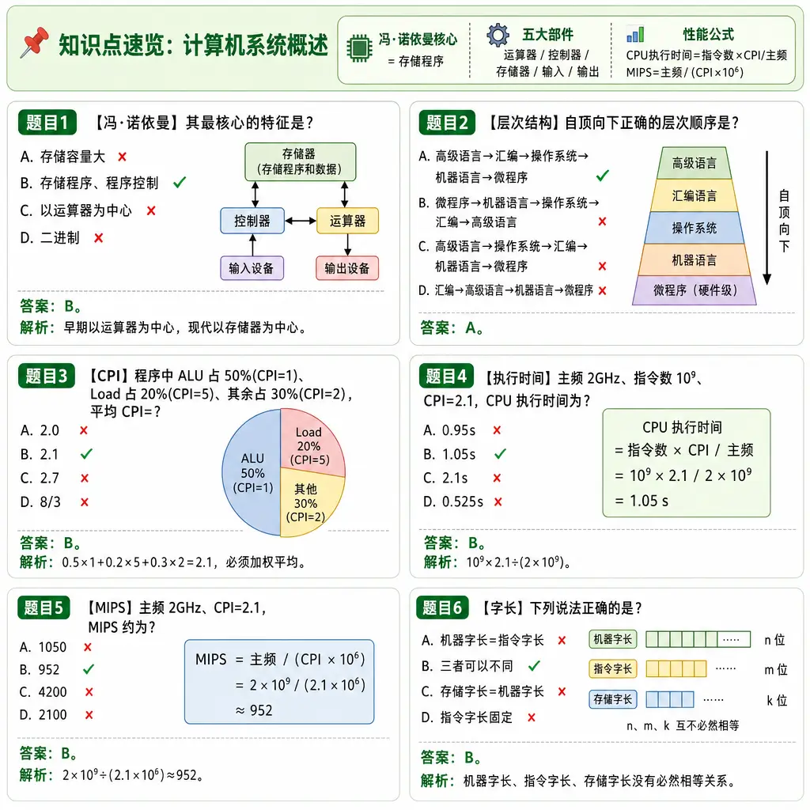
（考点归类供参考，具体题号以历年原卷为准）
第2章 数据的表示和运算
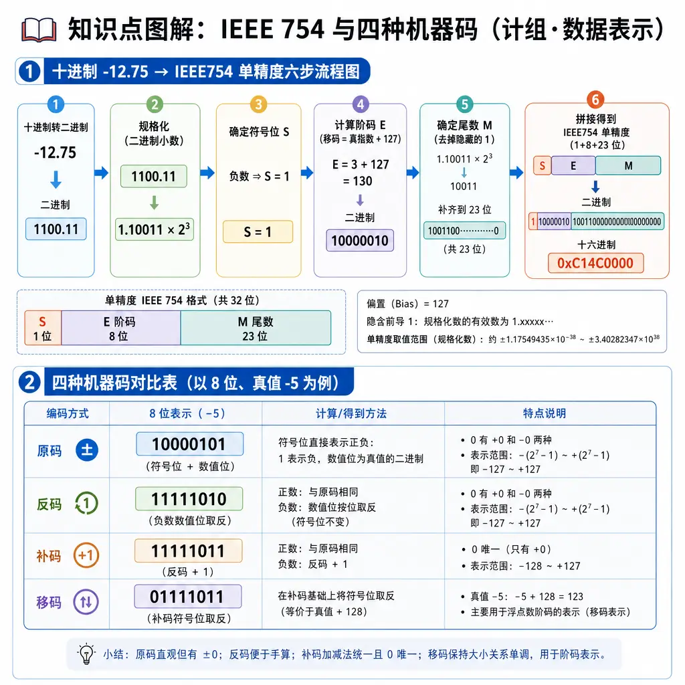
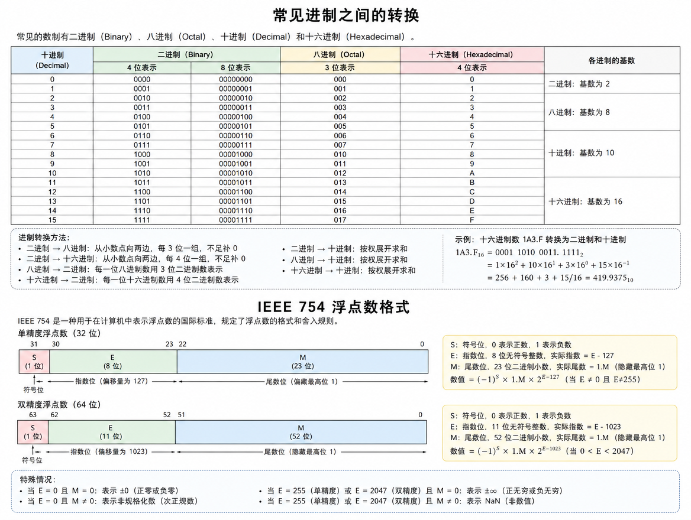
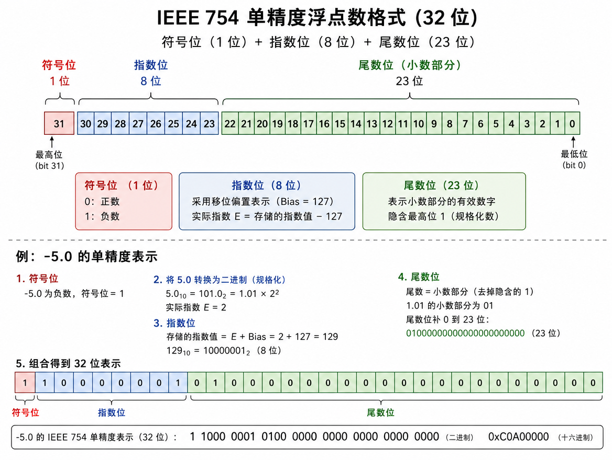
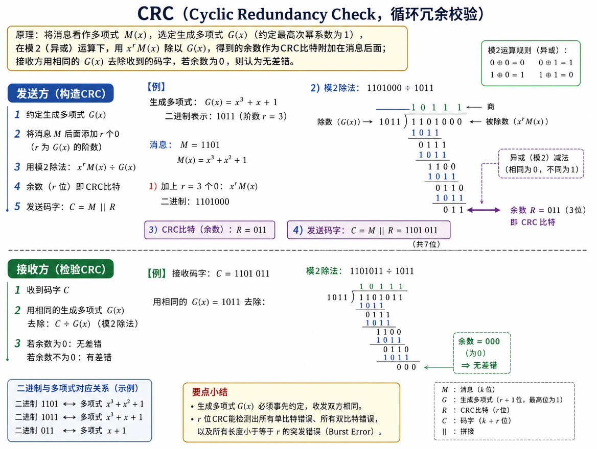
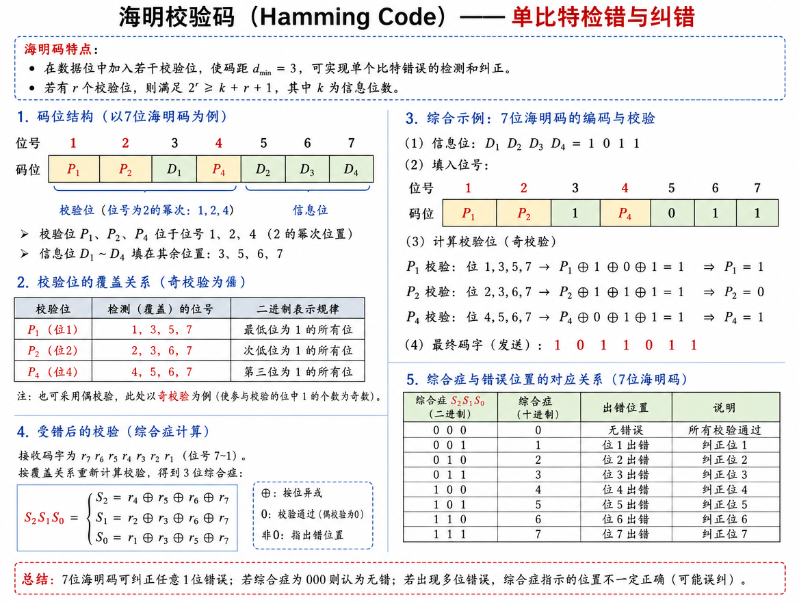
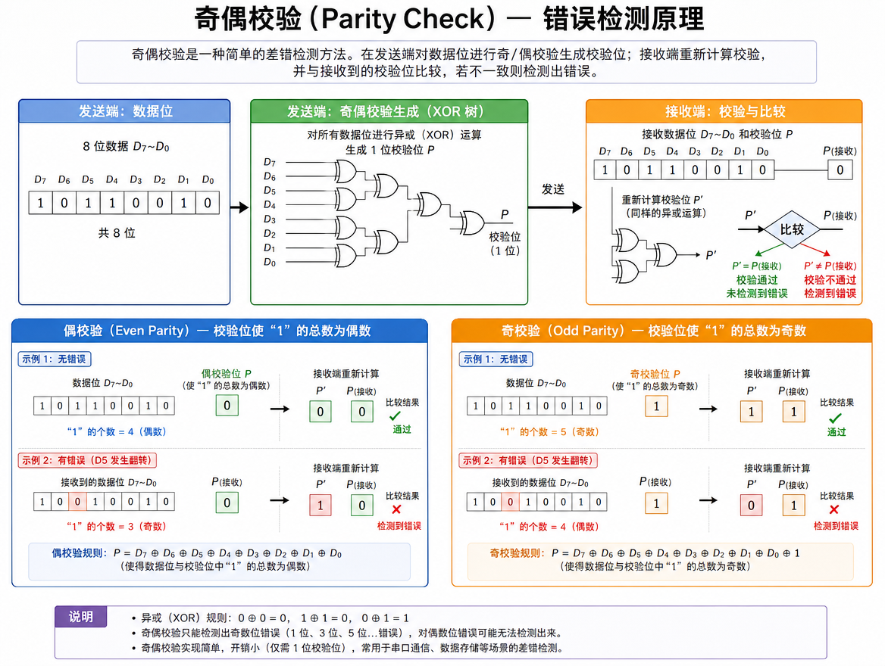
【分值占比】约 6~10 分
【考频】⭐⭐⭐⭐（高频，为后续章节打基础）
【必背】
- 进位计数制及相互转换（二、八、十、十六进制）
- BCD码：8421码、2421码、余3码；格雷码
- 字符编码：ASCII、Unicode
- 定点数的原码、反码、补码、移码表示
- 移位运算：逻辑移位与算术移位
- 补码加减运算及溢出判断
- 乘法：原码一位乘、补码一位乘（Booth）；除法：恢复余数法、加减交替法
- 浮点数的IEEE 754标准
- 浮点数的加减运算步骤
- 算术逻辑单元（ALU）：加法器、进位链
- 数据校验码：奇偶校验码、海明校验码、CRC循环冗余校验码
【核心概念】
2.1 进位计数制
| 进制 | 基数 | 数码 | 后缀 |
|---|---|---|---|
| 二进制 | 2 | 0,1 | B |
| 八进制 | 8 | 0~7 | O |
| 十进制 | 10 | 0~9 | D |
| 十六进制 | 16 | 0~9,A~F | H |
进制转换： - R进制 → 十进制：按权展开求和 - 十进制 → R进制：整数部分除R取余，小数部分乘R取整 - 二进制 ↔ 八进制：3位一组 - 二进制 ↔ 十六进制：4位一组
2.2 BCD码与常用编码
8421码：每4位二进制表示1位十进制数，权为8、4、2、1（有权码）。
2421码：有权码，权为2、4、2、1；大于等于5的数最高位为1（自补特性：9的补码可由原码按位取反得到）。
余3码：8421码 + 0011，无权码，也具有自补特性。
格雷码（循环码）：相邻两个代码只有一位不同，抗干扰性好，常用于编码盘；它不是有权码。
| 十进制 | 8421码 | 2421码 | 余3码 | 格雷码 |
|---|---|---|---|---|
| 0 | 0000 | 0000 | 0011 | 0000 |
| 1 | 0001 | 0001 | 0100 | 0001 |
| 2 | 0010 | 0010 | 0101 | 0011 |
| 3 | 0011 | 0011 | 0110 | 0010 |
| 4 | 0100 | 0100 | 0111 | 0110 |
| 5 | 0101 | 1011 | 1000 | 0111 |
| 6 | 0110 | 1100 | 1001 | 0101 |
| 7 | 0111 | 1101 | 1010 | 0100 |
| 8 | 1000 | 1110 | 1011 | 1100 |
| 9 | 1001 | 1111 | 1100 | 1101 |
⚠️ 易错警示：8421码和2421码是有权码，余3码和格雷码是无权码；8421码中1010~1111为非法码。
2.3 定点数的表示
原码：符号位 + 绝对值 $$[+x]{原} = 0.x, \quad [-x]{原} = 1.x$$ - 0有两种表示：$+0 = 0.00...0$，$-0 = 1.00...0$ - 范围（n位整数）：$-(2^{n-1}-1)$ ~ $+(2^{n-1}-1)$
反码： $$[+x]{反} = 0.x, \quad [-x]{反} = 1.\bar{x}$$ （负数反码：符号位不变，数值位按位取反；0也有两种表示）
补码（重点）：设模为 $M$，则 $[x]_{补} = M + x \pmod{M}$。
⚠️ 易错警示：模的取值随机器数格式不同而不同—— - 纯小数补码：模 $M = 2$，即 $[x]{补} = 2 + x \pmod{2}$ - 整数补码（含符号位共 n 位）：模 $M = 2^n$，即 $[x]{补} = 2^n + x \pmod{2^n}$
- 0唯一表示：$00...0$
- 范围（n位整数）：$-2^{n-1}$ ~ $+(2^{n-1}-1)$
- 负数补码求法：原码符号位不变，数值位取反+1
- 已知补码求真值：正数不变，负数数值位取反+1（符号位不变）
移码： $$[x]_{移} = 2^{n-1} + x \quad (-2^{n-1} \leq x < 2^{n-1})$$ - 移码 = 补码符号位取反 - 用于浮点数的阶码表示，便于比较大小
定点整数四种机器码对照（数值位 n−1 位，含符号共 n 位）：
| 机器码 | 0 的表示 | 最小值 | 最大值 | 负数定义要点 |
|---|---|---|---|---|
| 原码 | 两种（±0） | $-(2^{n-1}-1)$ | $+(2^{n-1}-1)$ | 符号位置1，数值位不变 |
| 反码 | 两种（±0） | $-(2^{n-1}-1)$ | $+(2^{n-1}-1)$ | 符号位置1，数值位取反 |
| 补码 | 唯一 | $-2^{n-1}$ | $+(2^{n-1}-1)$ | 符号位置1，数值位取反+1 |
| 移码 | 唯一 | $-2^{n-1}$ | $+(2^{n-1}-1)$ | 补码符号位取反（真值+$2^{n-1}$） |
定点小数对照（数值位 n 位）：原码/反码范围 $-(1-2^{-n})$ ~ $+(1-2^{-n})$；补码范围 $-1$ ~ $+(1-2^{-n})$，可多表示一个 $-1$。
移位运算：
| 移位类型 | 左移空位补 | 右移空位补 | 说明 |
|---|---|---|---|
| 逻辑移位 | 0 | 0 | 把机器数当无符号数处理 |
| 算术移位（原码） | 0 | 0 | 符号位不参与移位 |
| 算术移位（补码） | 0 | 补符号位 | 左移补0、右移补符号位 |
| 算术移位（反码） | 负数补1 | 负数补1 | 正数与原码相同，负数空位补1 |
【例】$[x]_{补} = 1.0110$（真值 $-0.625$），算术右移1位得 $1.1011$（真值 $-0.3125$），相当于除以2；算术左移1位得 $1.1100$（真值变为 $-0.25$，而正确结果应为 $-0.625\times2 = -1.25$，超出定点小数补码范围，故发生溢出）。
🔑 口诀："逻辑全补0，算术看码制；补码左0右符，反码负数补1。" 移位可实现乘除 $2^k$：左移 $k$ 位 ×$2^k$，右移 $k$ 位 ÷$2^k$（补码负数右移为向下取整）。
2.4 定点数运算
补码加减法： $$[A + B]{补} = [A]{补} + [B]{补} \pmod{M}$$ $$[A - B]{补} = [A]{补} + [-B]{补} \pmod{M}$$
溢出判断（三种方法）： 1. 单符号位：正+正=负，或负+负=正，则溢出 2. 进位判断：最高位进位 ⊕ 次高位进位 = 1 则溢出 3. 双符号位（变形补码）：结果符号位为01（正溢）或10（负溢）
乘法（原码一位乘）： - 符号位单独处理（异或），数值部分绝对值相乘 - 每步根据乘数末位：为1则部分积加被乘数，为0则加0，然后部分积与乘数一起右移一位
乘法（补码一位乘 Booth 算法）：
- 参加运算的数用补码表示，符号位直接参与运算，结果直接为补码
- 乘数最低位后增设附加位 $y_{n+1} = 0$，每次比较末两位 $y_n y_{n+1}$：
| $y_n y_{n+1}$ | 操作 |
|---|---|
| 00 | 部分积不变，右移一位 |
| 01 | 部分积 $+[x]_{补}$，右移一位 |
| 10 | 部分积 $+[-x]_{补}$，右移一位 |
| 11 | 部分积不变，右移一位 |
- 共做 $n+1$ 步（$n$ 为数值位数），最后一步只做加减、不移位。
【例】$x = -0.1101$，$y = +0.1011$，用 Booth 算法求 $[x \cdot y]_{补}$。
解：$[x]{补} = 11.0011$，$[-x]{补} = 00.1101$（双符号位），部分积初值 00.0000，乘数 01011，附加位 0。
| 步骤 | 判断位 | 操作 | 部分积 |
|---|---|---|---|
| 1 | 10 | $+[-x]_{补}$，右移 | 00.1101 → 00.0110 |
| 2 | 11 | 不变，右移 | 00.0011 |
| 3 | 01 | $+[x]_{补}$，右移 | 11.0110 → 11.1011 |
| 4 | 10 | $+[-x]_{补}$，右移 | 00.1000 → 00.0100 |
| 5 | 01 | $+[x]_{补}$，不移位 | 11.0111 |
结果 $[x \cdot y]_{补} = 1.01110001$，真值 $= -0.10001111$。
除法：两种方法不要混淆——
| 对比项 | 恢复余数法 | 加减交替法（不恢复余数法） |
|---|---|---|
| 余数为正（够减） | 商1，余数左移1位后减除数 | 商1，余数左移1位后减除数 |
| 余数为负（不够减） | 商0，先加除数恢复余数，再左移1位减除数 | 商0，不恢复，余数左移1位后加除数 |
| 运算步数 | 不固定（恢复次数不定） | 固定 $n+1$ 步，便于控制 |
| 最后一步 | 商符单独处理（原码除法） | 若余数为负需恢复一次余数 |
🔑 口诀："恢复余数：负了先还原再左移减；加减交替：负了直接走，左移改加除数。" 加减交替法正是恢复余数法合并相邻两步推导而来，二者结果一致。
2.5 浮点数表示
一般格式： $$N = (-1)^S \times M \times R^E$$ - $S$：符号位 - $M$：尾数（决定精度） - $E$：阶码/指数（决定范围） - $R$：基数（通常为2）
规格化：尾数最高位为有效位。 - 原码规格化：$0.1xxx...$ 或 $1.1xxx...$ - 补码规格化：符号位与最高数值位不同（$0.1...$ 或 $1.0...$）
2.6 IEEE 754标准（重点）
| 类型 | 符号位 | 阶码 | 尾数 | 总位数 | 偏置值 |
|---|---|---|---|---|---|
| 短浮点数（float） | 1 | 8 | 23 | 32 | 127 |
| 长浮点数（double） | 1 | 11 | 52 | 64 | 1023 |
格式：$V = (-1)^S \times (1.M) \times 2^{E-\text{偏置值}}$
- 阶码全0：非规格化数（$0.M \times 2^{1-\text{偏置值}}$）或 ±0
- 阶码全1：无穷大（$M = 0$）或 NaN（$M \neq 0$）
- 阶码其他：规格化数，隐含最高位1
范围（float）： - 最大正数：$(2-2^{-23}) \times 2^{127} \approx 3.4 \times 10^{38}$ - 最小正数（规格化）：$1.0 \times 2^{-126} \approx 1.18 \times 10^{-38}$ - 最小正数（非规格化）：$2^{-149} \approx 1.4 \times 10^{-45}$
【例】将十进制数 $-12.75$ 转换为 IEEE 754 单精度浮点数，并写出十六进制形式。
解：
1. 转二进制：$12.75 = 1100.11\text{B}$
2. 规格化：$1100.11 = 1.10011 \times 2^{3}$
3. 符号位：负数，$S = 1$
4. 阶码：$E = 3 + 127 = 130 = 10000010\text{B}$
5. 尾数：去掉隐含的1，$M = 100\,1100\,0000\,0000\,0000\,0000$（补足23位）
6. 拼接：$\underbrace{1}{S}\ \underbrace{10000010}{E}\ \underbrace{10011000000000000000000}_{M}$
7. 按4位分组转十六进制：1100 0001 0100 1100 0000 0000 0000 0000 → 0xC14C0000
【例】将 IEEE 754 单精度数 0xC14C0000 还原为十进制。
解：展开为二进制 1 10000010 10011000000000000000000：$S=1$ 为负；$E = 130$，真指数 $= 130-127 = 3$；尾数补隐含位 $= 1.10011\text{B}$。$V = -1.10011\times2^{3} = -1100.11\text{B} = -12.75$。
💡 技巧："一转二规三偏置，拼接之后四分组"——十进制→二进制→规格化→阶码加偏置→拼接→按4位分组转十六进制，是最高频考题套路。
2.7 浮点数运算
加减运算步骤： 1. 对阶：小阶向大阶看齐，小阶数的尾数右移（阶差多少位就右移多少位） 2. 尾数求和：按定点数加减法运算 3. 规格化：左规（尾数左移、阶码减）或右规（尾数右移、阶码加） 4. 舍入：0舍1入、恒置1、截断 5. 溢出判断：阶码溢出才是真正的溢出（尾数溢出可右规解决）
【例】设阶码、尾数均用原码表示，尾数保留4位（运算中设2位保护位），$x = 2^{01} \times 0.1011$，$y = 2^{11} \times 0.1110$，求 $x + y$。
解： 1. 对阶：$\Delta E = 11 - 01 = 2$，$x$ 阶码改为 11，尾数右移2位：$0.1011 \to 0.0010\,11$（"11"为保护位） 2. 尾数求和：$0.0010\,11 + 0.1110\,00 = 1.0000\,11$，尾数溢出（和 ≥ 1） 3. 右规：尾数右移1位、阶码加1：$0.1000\,01(1)$，阶码变为 100 4. 舍入（0舍1入）：移出位为1，末位加1：$0.1000 + 0.0001 = 0.1001$ 5. 溢出判断：阶码 100 未超范围，无溢出
结果 $x + y = 2^{100} \times 0.1001$（真值 9，精确值 8.375，舍入引入误差；若采用截断法则为 $2^{100} \times 0.1000$）。
🔑 口诀："对阶：小阶向大阶看齐；尾和：按定点加减；规格化：左减右加；舍入：0舍1入；溢出：只看阶码。"
2.8 算术逻辑单元（ALU）
一位全加器： $$S_i = A_i \oplus B_i \oplus C_{i-1}$$ $$C_i = A_iB_i + (A_i \oplus B_i)C_{i-1}$$
串行加法器：逐位相加，速度慢。
并行加法器：各位同时计算，关键在进位传递。
进位链：定义进位产生函数与进位传递函数——
$$G_i = A_iB_i \quad (\text{本位产生进位}), \qquad P_i = A_i \oplus B_i \quad (\text{传递低位进位})$$
则 $C_i = G_i + P_iC_{i-1}$。
- 串行进位（行波进位）：$C_i = G_i + P_iC_{i-1}$，逐级等待，延迟 $O(n)$
- 并行进位（先行进位）：将递推式展开，同时产生各位进位，延迟 $O(\log n)$
以 4 位先行进位为例展开：
$$C_1 = G_1 + P_1C_0$$ $$C_2 = G_2 + P_2G_1 + P_2P_1C_0$$ $$C_3 = G_3 + P_3G_2 + P_3P_2G_1 + P_3P_2P_1C_0$$ $$C_4 = G_4 + P_4G_3 + P_4P_3G_2 + P_4P_3P_2G_1 + P_4P_3P_2P_1C_0$$
💡 技巧：展开规律——"$C_i$ 含 $i+1$ 项，第 $k$ 项由 $G$ 打头、$P$ 连乘铺路、$C_0$ 收尾"。
ALU功能：算术运算（加减乘除）、逻辑运算（与或非异或）、移位。
2.9 数据校验码
码距：两个合法码字之间不同二进制位的最小个数。码距 $d \geq 2$ 才能检错；检 $e$ 位错需 $d \geq e+1$，纠 $t$ 位错需 $d \geq 2t+1$。
奇偶校验码：在数据位后加1位校验位。 - 奇校验：使整个码字中1的个数为奇数；偶校验：使1的个数为偶数 - 码距为2，只能检测奇数位错误，不能纠错，不能检测偶数位错误
海明（Hamming）校验码：在 $n$ 位有效信息中插入 $k$ 位校验位，须满足
$$2^k \geq n + k + 1$$
- 校验位 $P_i$ 放在海明位号 $2^{i-1}$ 处（第1、2、4、8…位），其余位放数据
- 分组规则：海明码位号 $H_j$ 的二进制第 $i$ 位为1的所有位（除 $P_i$ 自身可含可不含，按偶校验/奇校验配平）构成第 $i$ 组
- 编码步骤：定 $k$ → 排位 → 按组做偶（奇）校验填 $P_i$
- 检错纠错：接收方按组重做校验得"指误字"，指误字的值即为出错位位号，取反即可纠1位错；码距为3，可纠1位错或检2位错（纠1检2需再加总奇偶校验位）
【例】对4位数据 $D_1D_2D_3D_4 = 1010$ 编制偶校验海明码。
解：$n=4$，由 $2^k \geq n+k+1$ 得 $k=3$，海明码共7位：$H_1H_2D_1H_4D_2D_3D_4$。
- $P_1$（位号1）管 $H_3H_5H_7 = D_1D_2D_4 = 1,0,0$，故 $P_1 = 1\oplus0\oplus0 = 1$
- $P_2$（位号2）管 $H_3H_6H_7 = D_1D_3D_4 = 1,1,0$，故 $P_2 = 1\oplus1\oplus0 = 0$
- $P_4$（位号4）管 $H_5H_6H_7 = D_2D_3D_4 = 0,1,0$，故 $P_4 = 0\oplus1\oplus0 = 1$
海明码为 $\underbrace{1}{P_1}\underbrace{0}{P_2}\underbrace{1}{D_1}\underbrace{1}{P_4}\underbrace{0}{D_2}\underbrace{1}{D_3}\underbrace{0}_{D_4} = 1011010$。
CRC 循环冗余校验码： - 设生成多项式 $G(x)$ 为 $r$ 次（对应 $r+1$ 位二进制除数） - 发送方：信息码后添 $r$ 个0，用 $G(x)$ 做模2除法（不借位的异或除法），所得 $r$ 位余数即为CRC校验码，附在信息码后发送 - 接收方：收到的码字对 $G(x)$ 做模2除法，余数为0则认为无错，否则出错 - 可检测所有奇数位错、所有长度 $\leq r$ 的突发错；常用 $G(x)$ 有 CRC-16、CRC-32 等
⚠️ 易错警示：模2除法"够位就商1、异或相减、不借位"；余数必须凑满 $r$ 位（不足前面补0）。海明公式中 $n$ 是有效信息位数，别把校验位算进去。
【易错警示】
- ⚠️ 补码范围比原码多一个负数（$-2^{n-1}$），0的表示唯一
- ⚠️ 纯小数补码模为2，n位整数补码模为 $2^n$，求负补码时先看清格式
- ⚠️ 移码只用于阶码比较大小，不能用于运算
- ⚠️ 算术右移时补码要补符号位，逻辑右移才补0，二者别混
- ⚠️ 加减交替法不恢复余数；只有恢复余数法在余数为负时先加除数还原
- ⚠️ IEEE 754的float阶码范围：$-126$ ~ $+127$（不是 $-127$ ~ $+128$，因为全0和全1保留）
- ⚠️ IEEE 754 规格化数尾数隐含最高位1，转换时别忘了去掉/补上
- ⚠️ 浮点数加减必须先对阶，小阶向大阶看齐
- ⚠️ 浮点数溢出看阶码，尾数溢出可以通过右规解决
- ⚠️ 舍入可能引发溢出，需再次判断
- ⚠️ 奇偶校验码不能纠错；海明码纠1位错需满足 $2^k \geq n+k+1$
【真题速查】
| 年份 | 题号 | 考点 |
|---|---|---|
| 2024 | 12, 13 | IEEE 754、补码运算 |
| 2023 | 12, 13 | 浮点数范围、溢出判断 |
| 2022 | 12, 13 | IEEE 754转换、Booth算法 |
| 2021 | 12, 13 | 浮点数加减、ALU |
| 2020 | 12, 13 | 补码运算、规格化 |
| 2019 | 12, 13 | 定点数乘法、浮点数 |
逐题真题：先阅读上方知识点，再按年份展开下列原题；每道题均已对应本章节知识点。
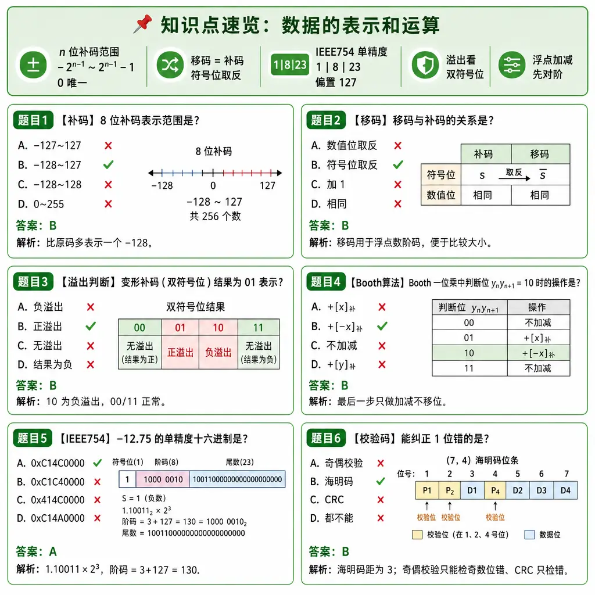
（考点归类供参考，具体题号以历年原卷为准）
第3章 存储系统
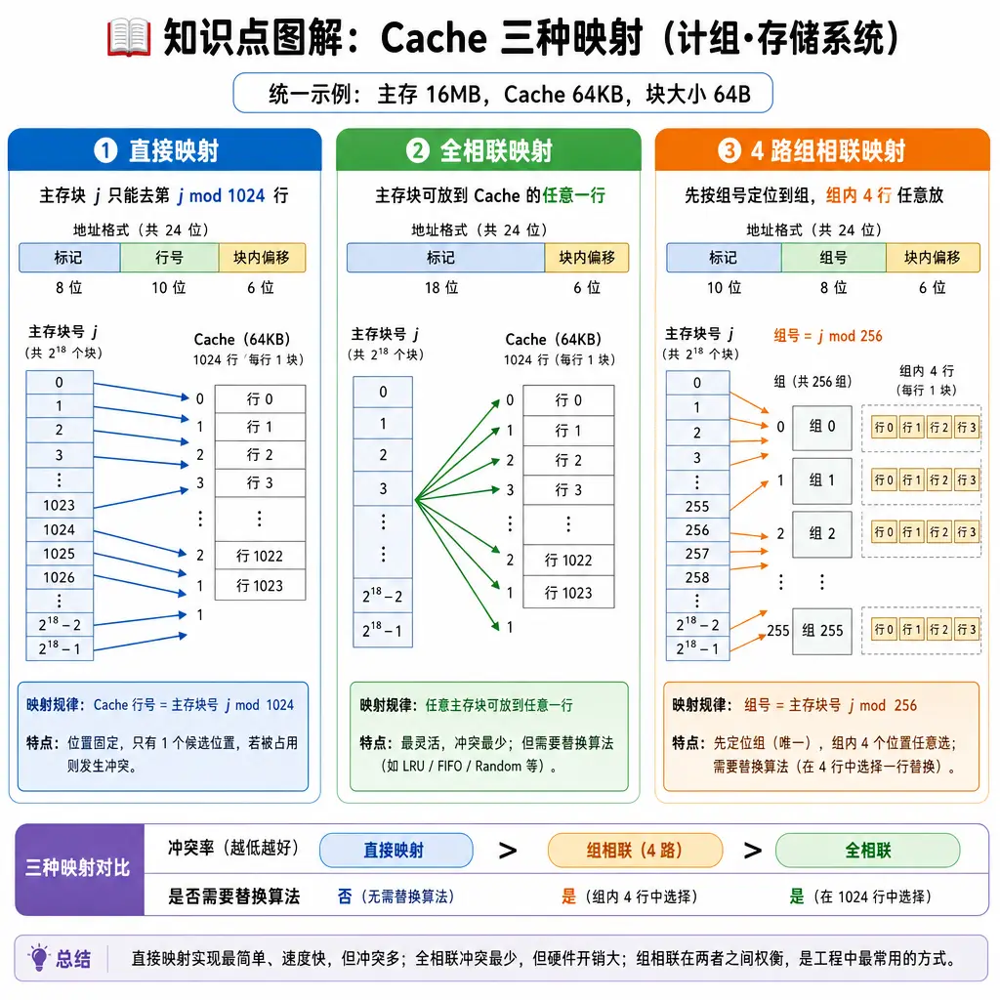
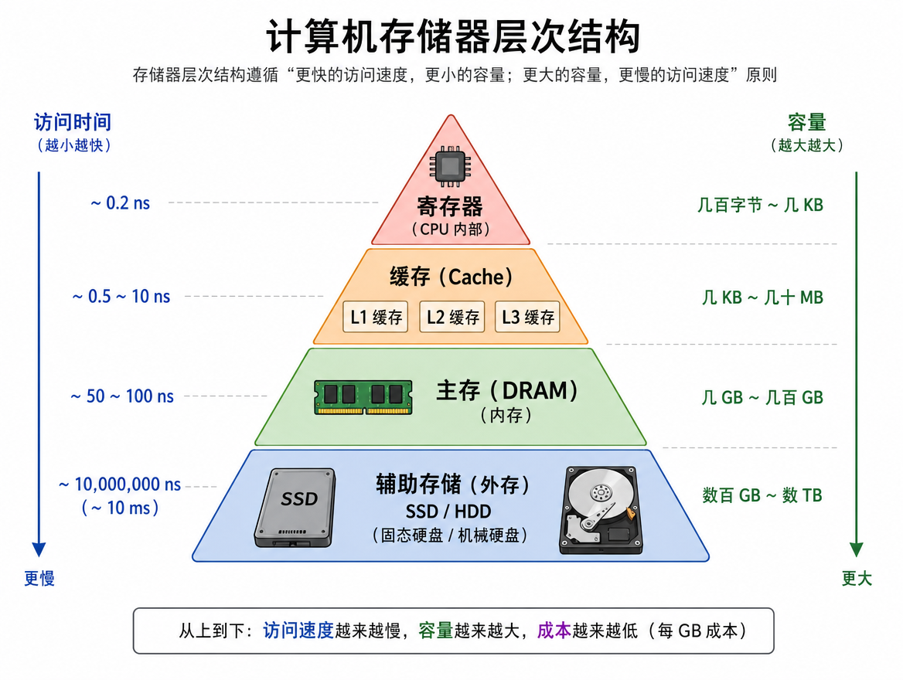

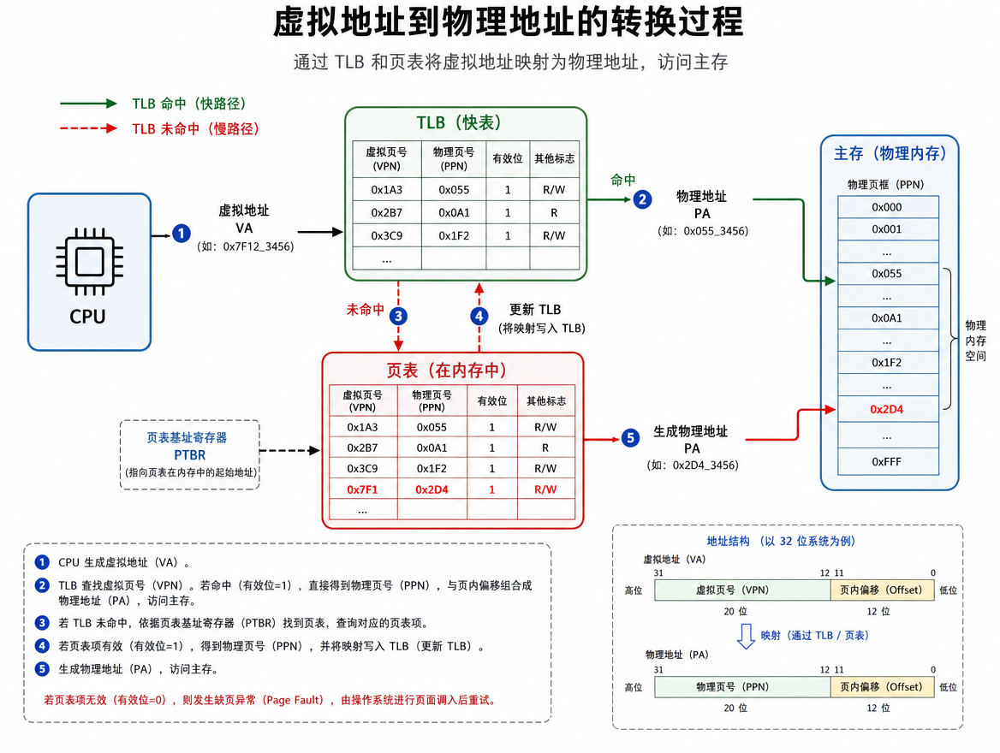
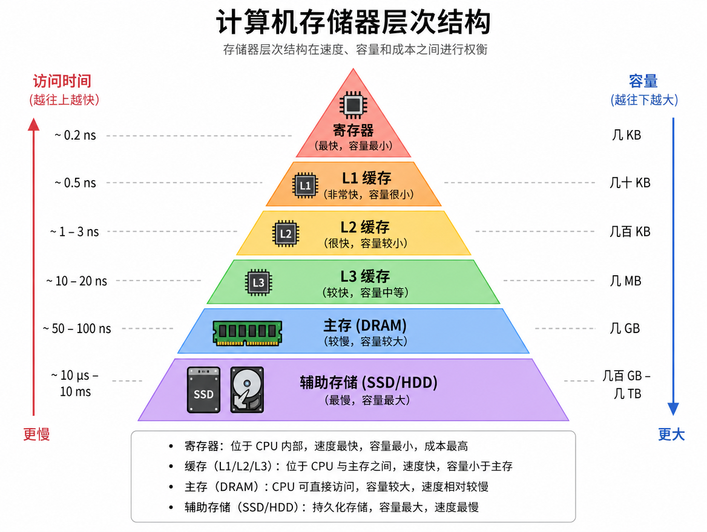
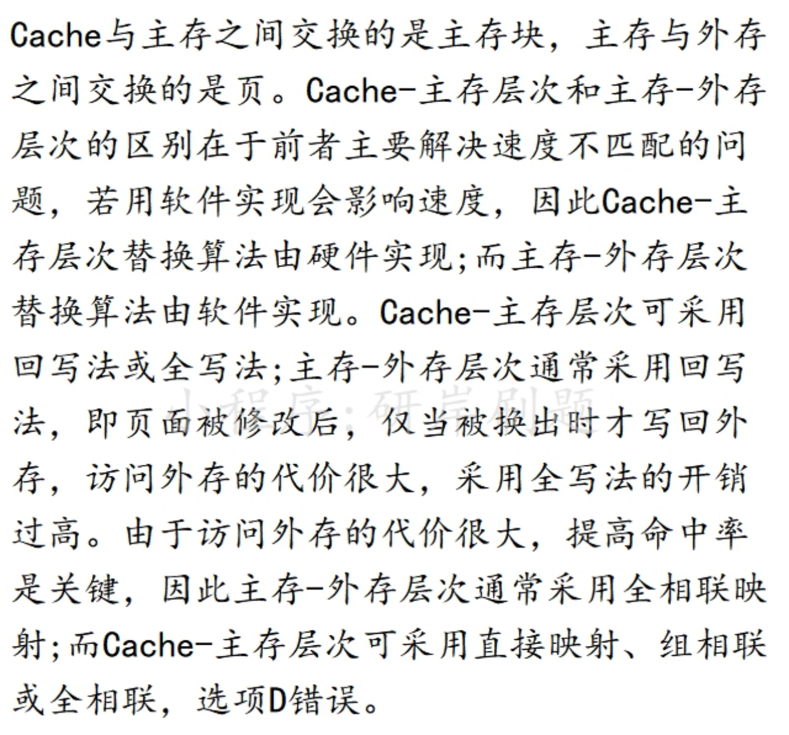
【分值占比】约 8~14 分
【考频】⭐⭐⭐⭐⭐（最高频，大题重灾区）
【必背】
- 存储器的分类与层次结构
- 存取时间与存取周期、存储带宽的概念
- SRAM与DRAM的工作原理、特点、比较
- DRAM的三种刷新方式及定量计算
- ROM的类型与特点
- 存储器与CPU的连接：位扩展、字扩展、字位同时扩展
- 片选信号的产生：线选法、译码法（74LS138）
- 多模块交叉存储器：高位/低位交叉编址与流水带宽
- Cache的工作原理、地址映射（直接/全相联/组相联）
- Cache替换算法、写策略、命中率与平均访问时间计算
- 虚拟存储器：页式、段式、段页式
- TLB（快表）的作用与工作原理
- 磁盘地址结构与平均存取时间计算
【核心概念】
3.1 存储器概述
存储器分类：
| 分类标准 | 类型 |
|---|---|
| 存储介质 | 磁表面、半导体、光存储 |
| 存取方式 | 随机存取RAM、顺序存取SAM、直接存取DAM、相联存取CAM |
| 可变性 | 可读可写RAM、只读ROM |
| 易失性 | 易失性（RAM）、非易失性（ROM、Flash） |
存储器层次结构：寄存器 → Cache → 主存 → 辅存（磁盘）→ 磁带/光盘
| 层次 | 速度 | 容量 | 价格/位 | 主要介质 |
|---|---|---|---|---|
| 寄存器 | 最快 | 最小 | 最贵 | 触发器 |
| Cache | 快 | 小 | 贵 | SRAM |
| 主存 | 中 | 中 | 中 | DRAM |
| 辅存 | 慢 | 大 | 便宜 | 磁盘、SSD |
存取时间与存取周期：
- 存取时间：从启动一次存储器读/写操作到完成该操作所经历的时间。
- 存取周期（存储周期）：连续两次独立访问存储器（读或写）所需的最小间隔时间。
- 关系：存取周期 = 存取时间 + 恢复时间，即存取周期 ≥ 存取时间。DRAM 读出后需要重写恢复，故其存取周期明显大于存取时间。
⚠️ 易错警示：存取周期 ≠ 存取时间，选择题高频陷阱。存取周期才是衡量"连续访问能力"的指标。
存储带宽：单位时间内存储器存取的信息量，单位 B/s 或 字/秒。
$$B = \frac{W}{T_m}$$
其中 $W$ 为一次存取的数据宽度，$T_m$ 为存取周期。
💡 提高带宽的三条途径：缩短存取周期、加宽数据位（位扩展）、多模块交叉并行存取（见 3.7）。
3.2 半导体存储器
SRAM（静态RAM）： - 存储元：6晶体管触发器 - 特点：速度快、功耗大、集成度低、不需要刷新 - 用途：Cache
DRAM（动态RAM）： - 存储元：1晶体管+1电容 - 特点：速度慢、功耗小、集成度高、需要刷新 - 刷新原因：电容漏电，数据会丢失 - 刷新方式：集中刷新、分散刷新、异步刷新 - 用途：主存
| 特性 | SRAM | DRAM |
|---|---|---|
| 存储元 | 6管触发器 | 1管1电容 |
| 速度 | 快 | 慢 |
| 功耗 | 大 | 小 |
| 集成度 | 低 | 高 |
| 刷新 | 不需要 | 需要 |
| 价格 | 贵 | 便宜 |
| 应用 | Cache | 主存 |
DRAM刷新（以行为单位，刷新周期典型值 2ms）：
- 集中刷新：在刷新周期内留出一段时间集中刷新所有行，期间禁止正常读写，这段时间称为"死时间"（死区）。
- 分散刷新：把每行的刷新分散到每个存取周期中（前半周期读写、后半周期刷新一行），无死时间，但等效存取周期加倍，系统速度降低。
- 异步刷新：折中方案，每隔"刷新周期 ÷ 行数"时间刷新一行，保证每行在刷新周期内都被刷新一次。
【例】某 16K×1 位 DRAM 芯片，内部为 128×128 存储矩阵，存取周期 0.5μs，刷新周期 2ms。
- 集中刷新：需留出 128 个存取周期刷新 128 行，死时间 = 128 × 0.5μs = 64μs，死时间率 = 64μs / 2ms = 3.2%。
- 分散刷新：每个存取周期都要刷新一行，等效存取周期变为 1μs，速度减半。
- 异步刷新：每隔 2ms / 128 ≈ 15.6μs 刷新一行，2ms 内恰好把 128 行各刷新一遍。
🔑 口诀：异步刷新间隔 = 刷新周期 ÷ 行数（按芯片内部"行数"算，不是按容量算）。
3.3 ROM
| 类型 | 特点 | 应用 |
|---|---|---|
| MROM | 掩模ROM，出厂固化不可改 | 批量生产 |
| PROM | 一次性可编程 | 早期产品 |
| EPROM | 紫外线擦除，可重复编程 | 开发调试 |
| EEPROM | 电擦除，可字节编程 | BIOS |
| Flash | 电擦除，块擦除，速度快 | U盘、SSD、BIOS |
3.4 存储器与CPU的连接
存储器扩展：
- 位扩展：增加数据位宽
- 如：2片8K×4位 → 8K×8位
-
地址线、片选线并联，数据线分别接高位/低位
-
字扩展：增加存储容量
- 如：2片8K×8位 → 16K×8位
-
数据线并联，地址线高位接译码器产生片选
-
字位同时扩展：
- 先位扩展组成一个组，再字扩展
片选信号产生： - 线选法：用高位地址线直接做片选，简单但有地址重叠 - 译码法：用译码器产生片选，地址连续无重叠
74LS138 译码器（3线-8线）： - 3 个使能端：$G_1$ 接高电平、$\overline{G}{2A}$、$\overline{G}{2B}$ 接低电平时译码器工作（常将 $\overline{MREQ}$ 接使能端，保证只有访存时才产生片选）。 - 3 个输入端 C、B、A 接高位地址线，8 个输出 $\overline{Y_0} \sim \overline{Y_7}$ 低电平有效，可直接接芯片的低电平有效片选端 $\overline{CS}$。
【例】（存储器扩展综合题）设 CPU 有 16 根地址线 A15~A0、8 根数据线 D7~D0，$\overline{MREQ}$ 为访存控制信号（低电平有效）。现有：2K×8 位 ROM、2K×4 位 RAM、74LS138 译码器及门电路若干。要求：6000H~67FFH 为系统程序区（ROM），6800H~6FFFH 为用户程序区（RAM）。
解：
第 1 步：容量与芯片数量。
- ROM 区：67FFH − 6000H + 1 = 800H = 2K×8 位 → 需 2K×8 位 ROM × 1 片。
- RAM 区：6FFFH − 6800H + 1 = 800H = 2K×8 位 → 需 2K×4 位 RAM × 2 片做位扩展。
第 2 步：写出地址范围（二进制），确定高位特征。
- ROM 区：0110 0000 0000 0000 ~ 0110 0111 1111 1111，即 A15A14A13 = 011，A12A11 = 00。
- RAM 区：0110 1000 0000 0000 ~ 0110 1111 1111 1111，即 A15A14A13 = 011，A12A11 = 10。
第 3 步：74LS138 连接。
- A15、A14、A13 分别接输入端 C、B、A；
- 使能端 $G_1$ 接 +5V，$\overline{G}{2A}$ 接 $\overline{MREQ}$，$\overline{G}{2B}$ 接地；
- 两个区域 A15A14A13 均为 011，落在 $\overline{Y_3}$ 输出范围内（6000H~7FFFH）。
第 4 步：产生片选。
- ROM 要求 A12A11 = 00：$\overline{CS}{ROM} = \overline{Y_3} + A{12} + A_{11}$（或门）；
- RAM 要求 A12A11 = 10：$\overline{CS}{RAM} = \overline{Y_3} + \overline{A{12}} + A_{11}$。
第 5 步：其余连线。
- 两片 RAM 数据线分别接 D7~D4、D3~D0（位扩展）；ROM 数据线接 D7~D0；
- 各芯片地址线 A10~A0 与 CPU 对应并联；
- ROM 只接 $\overline{OE}$（读控制），RAM 接 $\overline{OE}$ 和 $\overline{WE}$（R/$\overline{W}$）。
🔑 解题套路：算容量定片数 → 写地址范围 → 定译码器输入与使能 → 高位特征 + 译码输出组合出片选 → 数据线/读写线收尾。
3.5 Cache（高速缓冲存储器）
局部性原理： - 时间局部性：最近访问的数据很可能再次被访问 - 空间局部性：访问某个地址后，其附近地址很可能被访问
Cache工作原理： - CPU先访问Cache，命中则直接读取 - 未命中则从主存调入Cache（以块为单位） - 命中率：
$$H = \frac{N_c}{N_c + N_m}$$
其中 $N_c$ 为命中 Cache 的次数，$N_m$ 为访问主存的次数。
Cache地址映射：
| 映射方式 | 原理 | 优点 | 缺点 |
|---|---|---|---|
| 直接映射 | 主存块只能放Cache特定行 | 实现简单、快 | 冲突率高 |
| 全相联映射 | 主存块可放Cache任意行 | 冲突率低 | 查找慢、成本高 |
| 组相联映射 | 先分组，组内全相联 | 折中方案 | 复杂度中等 |
直接映射的行号计算：主存块号 $j$ 映射到 Cache 行号
$$i = j \bmod C$$
其中 $C$ 为 Cache 行数。如 $C = 1024$，主存块号 2051 → $i = 2051 \bmod 1024 = 3$。
直接映射地址划分：
| 标记 | Cache行号 | 块内地址 |
组相联映射地址划分：
| 标记 | 组号 | 块内地址 |
【例】（三种映射地址位数划分）设主存容量 16MB（24 位地址），Cache 容量 64KB，块长 64B。
- 块内地址：$\log_2 64 = 6$ 位（三种映射相同）；
-
Cache 行数 = 64KB / 64B = 1024 行。
-
直接映射：行号 $\log_2 1024 = 10$ 位，标记 = 24 − 10 − 6 = 8 位，即 标记 8 位 | 行号 10 位 | 块内 6 位。
- 全相联映射：无行号字段，标记 = 24 − 6 = 18 位，即 标记 18 位 | 块内 6 位。
- 4 路组相联：组数 = 1024 / 4 = 256 组，组号 8 位，标记 = 24 − 8 − 6 = 10 位，即 标记 10 位 | 组号 8 位 | 块内 6 位。
【例】（命中率与平均访问时间）设 Cache 命中率 $H = 0.95$，Cache 存取时间 $T_c = 10$ ns，主存存取时间 $T_m = 100$ ns。
- 模型一（先访 Cache，未命中再访主存）：
$$T_a = T_c + (1-H) \times T_m = 10 + 0.05 \times 100 = 15 \text{ ns}$$
- 模型二（Cache 与主存同时启动访问，Cache 命中则中止主存访问）：
$$T_a = H \times T_c + (1-H) \times T_m = 0.95 \times 10 + 0.05 \times 100 = 14.5 \text{ ns}$$
⚠️ 易错警示：两种模型相差 $(1-H)T_c$。题目明确"同时访问/并行访问"才用模型二；未特别说明时按"先访 Cache"的模型一计算。访问效率 $e = T_c / T_a$。
【例】（Cache 实际容量，含标记开销）主存 16MB，直接映射 Cache 数据容量 64KB，块长 64B，采用写回法。
- Cache 行数 = 1024 行；
- 每行存储开销 = 数据 64×8 = 512 位 + 标记 8 位 + 有效位 1 位 + 修改位 1 位 = 522 位；
- 实际总容量 = 1024 × 522 位 = 534528 位 ≈ 65.2 KB ＞ 64 KB。
⚠️ 易错警示：问"Cache 实际容量/存储容量"时必须计入标记和有效位；写回法还要加修改位（脏位），组相联采用 LRU 时还可能计入替换位。
替换算法： - 随机（RAND）：随机选择 - 先进先出（FIFO）：最早进入的先替换 - 最近最少使用（LRU）：最久未访问的替换（实现复杂但效果好） - 最不经常使用（LFU）：访问次数最少的替换
写策略——写命中维度（写 Cache 命中时）：
| 策略 | 做法 | 特点 |
|---|---|---|
| 写直达（全写法） | 同时写 Cache 和主存 | 一致性好、实现简单；写速度慢，常配写缓冲 |
| 写回法 | 只写 Cache，该行被替换时才写回主存 | 写速度快；需设修改位，一致性维护复杂 |
写策略——写不命中维度（写 Cache 未命中时）：
| 策略 | 做法 | 常见搭配 |
|---|---|---|
| 写分配法 | 先把主存块调入 Cache，再在 Cache 中写 | 常与写回法搭配 |
| 非写分配法（绕写法） | 直接写主存，不调入 Cache | 常与写直达搭配 |
⚠️ 易错警示：写直达/写回属于"命中"维度，写分配/非写分配属于"不命中"维度，两个维度相互独立、自由组合；常见组合为"写直达+非写分配"和"写回+写分配"。
3.6 虚拟存储器
基本概念：给用户提供一个比实际主存大得多的地址空间。
页式虚拟存储器： - 虚拟地址空间划分成固定大小的页 - 主存划分成同样大小的页框 - 页表：记录虚拟页到物理页框的映射 - 页表项包含：有效位、物理页框号、修改位、访问位、保护位等
段式虚拟存储器： - 按程序逻辑结构分段（代码段、数据段、堆栈段等） - 段长可变 - 段表：记录段基址、段长、状态等
段页式虚拟存储器： - 先分段，段内再分页 - 结合段的逻辑独立性和页的固定大小优点
TLB（Translation Lookaside Buffer）： - 页表的高速缓存，存放最近使用的页表项 - 快表命中则无需访问主存中的页表 - 采用全相联或组相联映射 - TLB与Cache的访问可以并行
缺页处理： 1. CPU发出虚拟地址 2. 查TLB，未命中则查页表 3. 页表项无效（缺页），触发缺页中断 4. OS处理：选一页淘汰，从磁盘调入所需页 5. 更新页表，重新执行指令
【例】（虚拟地址位数划分与页表大小）某机采用页式虚拟存储器，虚拟地址 32 位，物理地址 28 位，页大小 4KB，每个页表项占 4B。
- 页内偏移 = $\log_2 4\text{K} = 12$ 位；
- 虚拟页号 = 32 − 12 = 20 位，物理页框号 = 28 − 12 = 16 位；
- 页表项数 = 虚页数 = $2^{20}$ = 1M 项；
- 页表大小 = $2^{20} \times 4\text{B} = 4$ MB。
🔑 页表大小 = 虚页数 × 页表项大小；虚页数由虚拟地址位数与页大小决定，与物理地址位数无关。
TLB / 页表 / Cache 联合访问的命中组合（访存次数按对存储器的访问次数计，含 Cache）：
| TLB | 页表（页是否在主存） | Cache | 访存次数 | 说明 |
|---|---|---|---|---|
| 命中 | — | 命中 | 1 | 最快：TLB 得物理地址，Cache 直接取数 |
| 命中 | — | 未命中 | 2 | 查 Cache 未中，再访主存取数 |
| 未命中 | 命中（页在主存） | 未命中 | 3 | 访主存查页表 + 查 Cache + 访主存取数 |
| 未命中 | 缺页 | — | 最慢 | 触发缺页中断，需磁盘调页 |
【例】某系统采用"TLB → 页表 → Cache"的访问流程，问：哪几种组合只需一次访存即可取得数据？答：仅"TLB 命中且 Cache 命中"一种。若 TLB 未命中但页在主存、Cache 未命中，则需 3 次访存。
⚠️ 易错警示：① TLB 命中不可能缺页（TLB 只缓存有效页表项）；② 缺页一定伴随 TLB 未命中；③ Cache 用的是物理地址，Cache 是否命中与虚实地址转换是否走页表无关。
3.7 多模块交叉存储器
目的：CPU 速度远快于主存，用多个存储模块并行/流水存取，提高存储带宽。
两种编址方式：
| 对比项 | 高位交叉编址 | 低位交叉编址 |
|---|---|---|
| 模块选择 | 地址高位选模块，低位为体内地址 | 地址低位选模块，高位为体内地址 |
| 连续地址分布 | 集中在同一模块内 | 分散在不同模块中 |
| 并行性 | 访问连续地址仍串行，不能流水 | 可流水并行访问连续地址 |
| 用途 | 便于扩容 | 提高带宽 |
低位交叉流水存取：设模块数为 $m$，单个模块存取周期为 $T$，总线传送周期为 $\tau$。
- 连续读取 $m$ 个字所需时间：
$$T_1 = T + (m-1)\tau$$
- 高位交叉（顺序方式）读取 $m$ 个字：$T_2 = mT$
- 实现不间断流水的条件：$m \geq T / \tau$
【例】设存储器由 4 个模块组成，每个模块存取周期 $T = 200$ ns，总线传送周期 $\tau = 50$ ns，按低位交叉编址。
- 低位交叉连续读 4 个字：$T_1 = 200 + 3 \times 50 = 350$ ns；
- 高位交叉（顺序存取）读 4 个字：$T_2 = 4 \times 200 = 800$ ns；
- 带宽提升约 $800 / 350 \approx 2.3$ 倍；且 $m = T/\tau = 4$，恰好满足连续流水条件。
⚠️ 易错警示：低位交叉连续读 $m$ 个字的时间是 $T + (m-1)\tau$ 而不是 $m\tau$——第一个字仍要经历完整存取周期 $T$；模块数超过 $T/\tau$ 后带宽不再提高。
3.8 辅助存储器（磁盘）
磁盘结构与地址： - 记录面 → 磁道（同心圆）→ 扇区（定长记录块） - 柱面：各记录面上同半径磁道的集合，所有磁头同步移动 - 磁盘地址 = 驱动器号 | 柱面号（磁道号）| 盘面号（磁头号）| 扇区号
平均存取时间 = 平均寻道时间 + 平均旋转延迟 + 传输时间：
$$T_{\text{存取}} = T_{\text{寻道}} + \frac{1}{2r} + \frac{b}{rN}$$
其中 $r$ 为转速（转/秒），$b$ 为传送字节数，$N$ 为每磁道字节数。
- 平均旋转延迟按"转半圈"计算：$\dfrac{1}{2r}$
- 传输时间：读 $b$ 字节需转过 $b/N$ 圈，即 $\dfrac{b}{rN}$
磁盘容量： - 格式化容量 = 记录面数 × 每面磁道数 × 每道扇区数 × 扇区字节数 - 非格式化容量 = 记录面数 × 每面磁道数 × 内圈磁道位密度 × 内圈周长
【例】某磁盘转速 7200 r/min（即 120 转/s），平均寻道时间 8ms，每磁道 64 个扇区，每扇区 512B，求读取一个扇区的平均存取时间。
- 平均旋转延迟 = $1 / (2 \times 120) \approx 4.17$ ms；
- 传输时间 = $1 / (120 \times 64) \approx 0.13$ ms；
- 平均存取时间 ≈ 8 + 4.17 + 0.13 ≈ 12.3 ms。
⚠️ 易错警示：① 旋转延迟是"平均转半圈"，不是转一整圈；② 7200 r/min 要先换算成 120 r/s 再代入；③ 寻道时间、旋转延迟、传输时间三项缺一不可。
【易错警示】
- ⚠️ 易错警示 Cache和TLB都是基于局部性原理，但Cache缓存数据，TLB缓存页表项
- ⚠️ 易错警示 直接映射不需要替换算法（位置固定），全相联和组相联需要
- ⚠️ 易错警示 写回策略在替换时才写主存，不是每次都不写
- ⚠️ 易错警示 虚拟地址→物理地址的转换由MMU完成，OS只处理缺页
- ⚠️ 易错警示 页式虚拟存储器的页大小固定，段式的段长可变
- ⚠️ 易错警示 Cache缺失由硬件处理，缺页由OS处理（软件）
- ⚠️ 易错警示 TLB缺失不一定导致缺页，可能只是TLB未命中但页在主存
- ⚠️ 易错警示 存取周期 ≥ 存取时间，DRAM 的存取周期明显大于存取时间
- ⚠️ 易错警示 低位交叉编址时连续地址分布在不同模块，高位交叉在同一模块，不要记反
【真题速查】
| 年份 | 考查题型 | 考点 |
|---|---|---|
| 2024 | 选择题+综合题 | Cache映射、存储器扩展、Cache大题 |
| 2023 | 选择题+综合题 | 虚拟存储、TLB、存储大题 |
| 2022 | 选择题+综合题 | Cache计算、页式虚拟存储、存储大题 |
| 2021 | 选择题+综合题 | 存储器连接、Cache写策略、存储大题 |
| 2020 | 选择题+综合题 | Cache命中计算、组相联、存储大题 |
| 2019 | 选择题+综合题 | DRAM刷新、Cache映射、存储大题 |
逐题真题：先阅读上方知识点，再按年份展开下列原题；每道题均已对应本章节知识点。
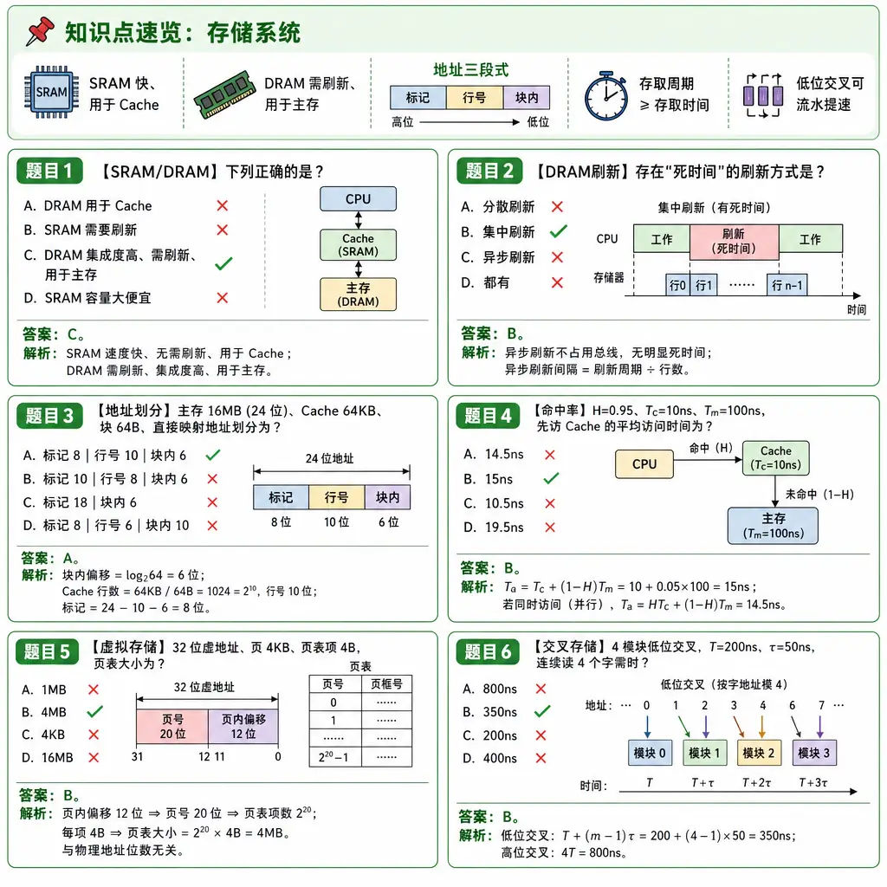
（考点归类供参考，具体题号以历年原卷为准）
第4章 指令系统
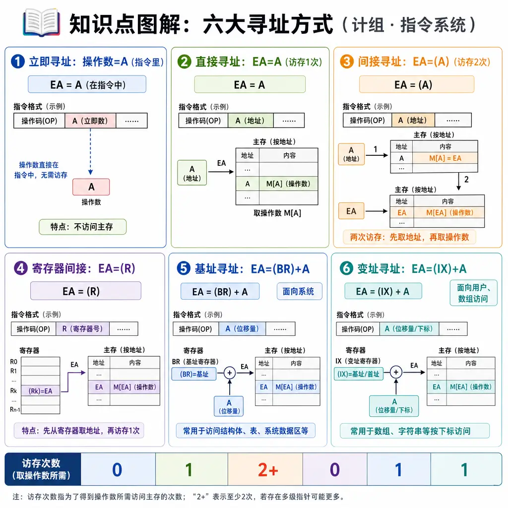
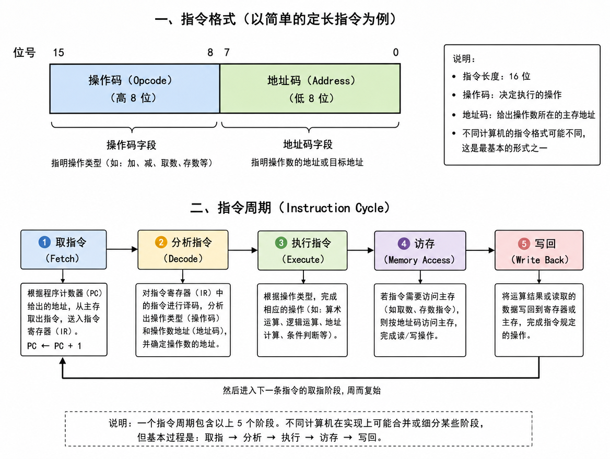
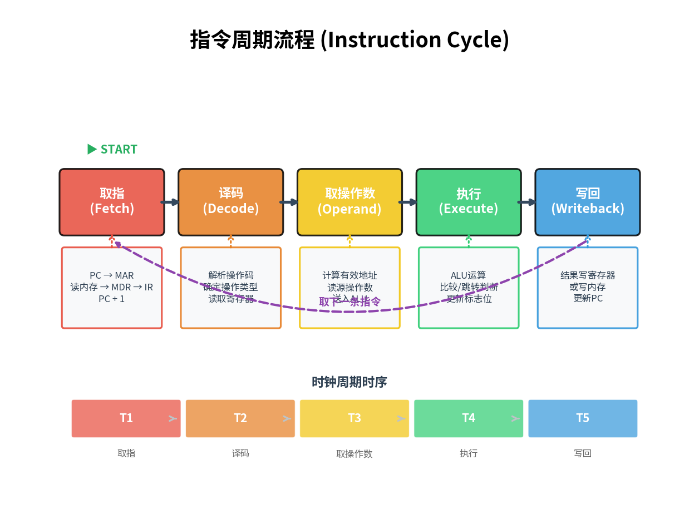
【分值占比】约 4~8 分
【考频】⭐⭐⭐（中等频率）
【必背】
- 指令格式：操作码+地址码
- 指令字长、机器字长、存储字长的关系
- 寻址方式：立即、直接、间接、寄存器、寄存器间接、基址、变址、相对、堆栈
- CISC与RISC的特点与比较
- 数据的对齐方式
【核心概念】
4.1 指令格式
基本格式：一条指令由操作码字段和地址码字段组成。操作码指明指令的操作性质与功能（其长度决定指令条数上限），地址码指明操作数的地址、运算结果存放地址及后继指令地址。
指令分类（按地址码数量）： - 零地址指令：只有操作码（如NOP、HALT、堆栈运算，操作数隐含在栈顶） - 一地址指令：$\mathrm{OP}(A) \to A$（单操作数），或 $(AC)\ \mathrm{op}\ (A) \to AC$（隐含累加器 AC） - 二地址指令：$(A_1)\ \mathrm{op}\ (A_2) \to A_1$（$A_1$ 为目的操作数，兼存结果） - 三地址指令：$(A_1)\ \mathrm{op}\ (A_2) \to A_3$ - 四地址指令：$(A_1)\ \mathrm{op}\ (A_2) \to A_3$，$A_4$ 为下一条指令地址
指令字长、机器字长、存储字长的关系：
| 概念 | 定义 |
|---|---|
| 机器字长 | CPU 一次能处理数据的二进制位数，与 ALU、通用寄存器的位数一致（如 32 位、64 位机） |
| 指令字长 | 一条指令的二进制位数。等于机器字长的称单字长指令，还有半字长、双字长指令 |
| 存储字长 | 一个存储单元可存放的二进制位数（按字编址时）；现代机器多按字节编址，存储字长常为 8 位的整数倍 |
- 三者没有必然的相等关系，但通常都取 8（一字节）的整数倍，并尽量使指令字长为机器字长（存储字长）的整数倍，以便访存取指高效。
- ⚠️ 易错警示：指令字长可变（如 x86），机器字长固定；取指周期中"PC+1"的"1"指的是一条指令所占的存储单元数，不是 1 个字节。
定长操作码 vs 扩展操作码： - 定长操作码：操作码位数固定，译码简单、速度快，但指令条数受限、指令字长利用率低。 - 扩展操作码：操作码长度不固定——地址码个数越少，操作码就越长，把"让出来"的地址码位数用于扩展操作码，从而在固定字长下容纳更多指令。 - 窗口留出规则：短操作码不能是长操作码的前缀（否则译码歧义）。每给下一级多留一个"全 1"（或约定）编码作扩展窗口，本级就要少安排一条指令。
🔑 口诀：短码让位留窗口，长码接着窗口走；短码非长码前缀。
【例】设某机指令字长 16 位，每个地址码占 4 位，采用扩展操作码技术。问：三地址、二地址、一地址、零地址指令各最多能安排多少条？
解答要点：自顶向下逐级扩展，每级最多留出 1 个扩展窗口。 - 三地址指令：操作码占 $16-3\times 4=4$ 位，共 $2^4=16$ 种编码，留 1 个作窗口 → 最多 15 条； - 二地址指令：操作码扩到 8 位，高 4 位占用上一级留下的 1 个窗口，低 4 位 16 种编码再留 1 个窗口 → 最多 15 条； - 一地址指令：同理，操作码扩到 12 位 → 最多 15 条； - 零地址指令：操作码扩到 16 位，低 4 位无需再留窗口 → 最多 16 条。 - 即典型的 15/15/15/16 共 61 条指令的编码方案。
⚠️ 易错警示：最后一级（零地址）不再需要留扩展窗口，所以是 16 条而不是 15 条；若题目要求各级指令条数给定（如三地址 14 条），则窗口数 = $16-14=2$ 个，下一级可用窗口相应增多，要按"实际剩余窗口数 × 每级容量"递推。
4.2 寻址方式
| 寻址方式 | 有效地址EA | 访存次数 | 特点 |
|---|---|---|---|
| 立即寻址 | 操作数 = A | 0 | 最快，范围受限 |
| 直接寻址 | EA = A | 1 | 简单，地址范围受限 |
| 间接寻址 | EA = (A) | 2+ | 范围大，速度慢 |
| 寄存器寻址 | 操作数 = R | 0 | 最快 |
| 寄存器间接 | EA = (R) | 1 | 便于循环 |
| 基址寻址 | EA = A + (BR) | 1 | 面向系统，BR由OS设定 |
| 变址寻址 | EA = A + (IX) | 1 | 面向用户，IX由程序员设定 |
| 相对寻址 | EA = (PC) + A | 1 | 转移指令，位置无关 |
| 堆栈寻址 | EA = SP | 1 | 隐含寻址 |
基址 vs 变址： - 基址：基址寄存器内容不变，偏移量A变 → 多道程序定位 - 变址：变址寄存器内容变，形式地址A不变 → 数组访问
相对寻址的转移范围：位移量 A 以补码表示，可正可负（向前/向后转移）。若 A 为 8 位补码，则 $A \in [-128, +127]$。注意取指后 PC 已自动增量，指向下一条指令，故：
$$\text{转移目标范围} = \big[\,(\text{PC}){\text{取指后}} - 128,\ (\text{PC}){\text{取指后}} + 127\,\big]$$
【例】某相对寻址的转移指令存放在主存地址 2000H 处，指令字长 2 字节，位移量 A 为 8 位补码。求该指令的转移目标范围。
解答要点：取指后 $(\text{PC}) = 2000\text{H} + 2 = 2002\text{H}$；转移目标下限 $= 2002\text{H} - 80\text{H} = 1\text{F}82\text{H}$，上限 $= 2002\text{H} + 7\text{FH} = 2081\text{H}$。即转移范围为 $[1\text{F}82\text{H},\ 2081\text{H}]$。
【例】（EA 综合计算）设主存按字编址，形式地址 $A=08$。已知：主存单元 (08)=120，(100)=150，(108)=180，(120)=200，寄存器 $(R)=100$。分别求以下寻址方式下的操作数：(1) 立即寻址；(2) 直接寻址；(3) 一次间接寻址；(4) 寄存器寻址；(5) 寄存器间接寻址；(6) 变址寻址（R 为变址寄存器）。
解答要点： - (1) 立即寻址：操作数 = A = 8（A 本身是操作数，不访存）； - (2) 直接寻址：EA = A = 08，操作数 = (08) = 120； - (3) 一次间址：EA = (A) = (08) = 120，操作数 = (120) = 200（访存 2 次）； - (4) 寄存器寻址：操作数 = (R) = 100； - (5) 寄存器间接：EA = (R) = 100，操作数 = (100) = 150； - (6) 变址寻址：EA = A + (R) = 08 + 100 = 108，操作数 = (108) = 180。
💡 技巧：先写 EA 再取内容，"括号每多一层就多访存一次"；立即寻址的 A 不是地址而是数本身。
数据对齐（边界对齐）：现代机器按字节编址，但访存一次通常按"字"边界读出整字。 - 边界对齐：半字（2B）地址是 2 的倍数，字（4B）地址是 4 的倍数，双字（8B）地址是 8 的倍数。任何数据一次访存即可读出，但会浪费部分存储空间（填充字节）。 - 边界不对齐：数据可紧挨存放，空间利用率高；但一个 4 字节的 int 若存放在地址 2 处（跨越两个存储字），需要访存 2 次并拼接，访存次数翻倍。 - 对齐 vs 不对齐对比：对齐时访存 1 次、空间有浪费；不对齐时空间省、最坏访存次数加倍。现代计算机普遍采用边界对齐（以空间换时间）。
4.3 CISC vs RISC
| 特性 | CISC（复杂指令集） | RISC（精简指令集） |
|---|---|---|
| 指令数 | 多（数百条） | 少（几十条） |
| 指令长度 | 变长 | 定长 |
| 指令周期 | 不同指令差异大 | 多数单周期 |
| 寻址方式 | 多而复杂 | 少而简单 |
| 访存指令 | 不限于Load/Store | 只有Load/Store访存 |
| 寄存器数量 | 较少 | 较多 |
| 实现方式 | 微程序控制 | 硬布线控制为主 |
| 代表 | x86 | ARM、MIPS、RISC-V |
【易错警示】
- ⚠️ 相对寻址的位移量A是补码，可正可负，且基准是取指后的PC值
- ⚠️ 基址寻址中基址寄存器内容通常由操作系统设定，用户不可改
- ⚠️ 变址寻址适合数组访问，相对寻址适合转移指令
- ⚠️ RISC不是指令少就一定简单，是通过简化指令提高流水线效率
- ⚠️ 对齐访问：半字地址是2的倍数，字地址是4的倍数；不对齐时一次访存可能变两次
【真题速查】
| 年份 | 题号 | 考点 |
|---|---|---|
| 2024 | 16 | 寻址方式 |
| 2023 | 16 | CISC/RISC |
| 2022 | 16 | 扩展操作码 |
| 2021 | 16 | 寻址方式计算 |
| 2020 | 16 | 指令格式设计 |
逐题真题：先阅读上方知识点，再按年份展开下列原题；每道题均已对应本章节知识点。
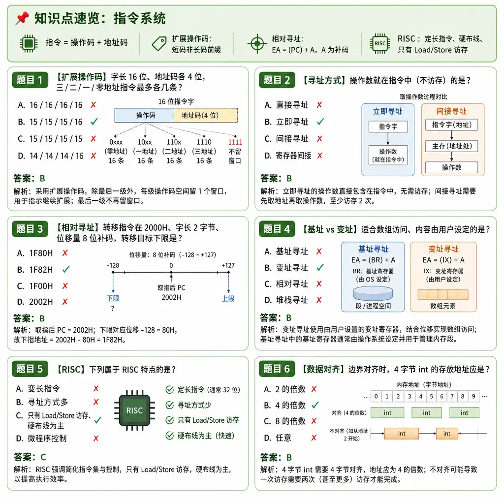
（考点归类供参考，具体题号以历年原卷为准）
第5章 中央处理器（CPU）
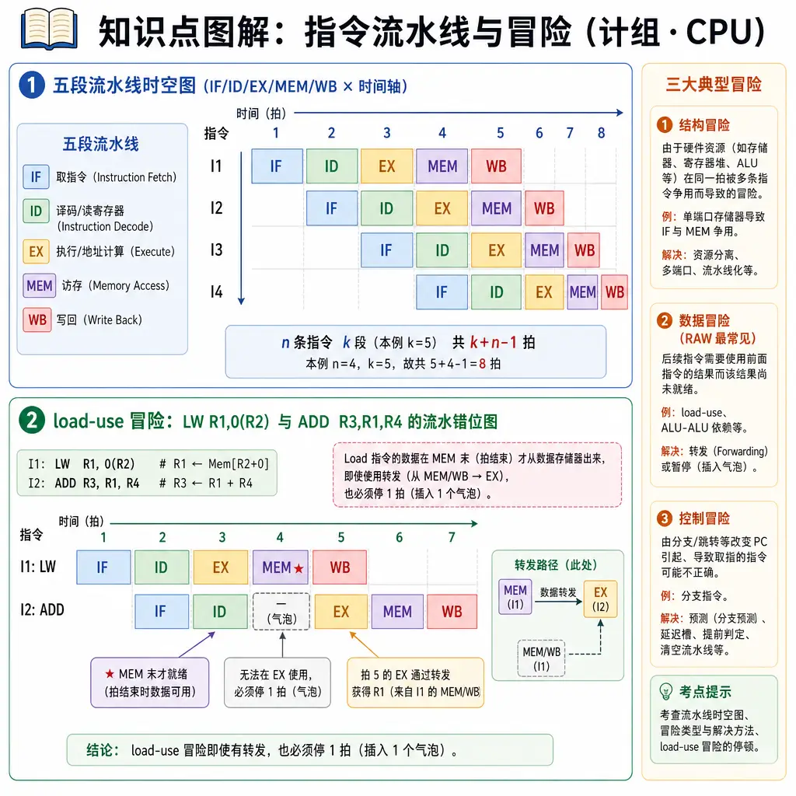
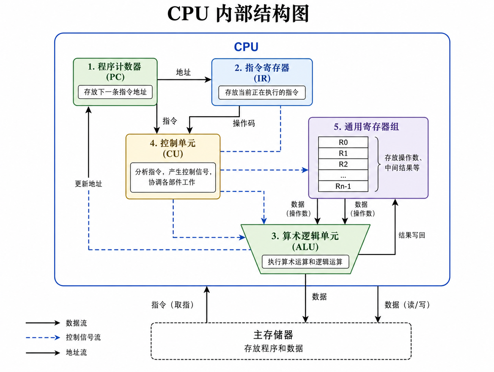
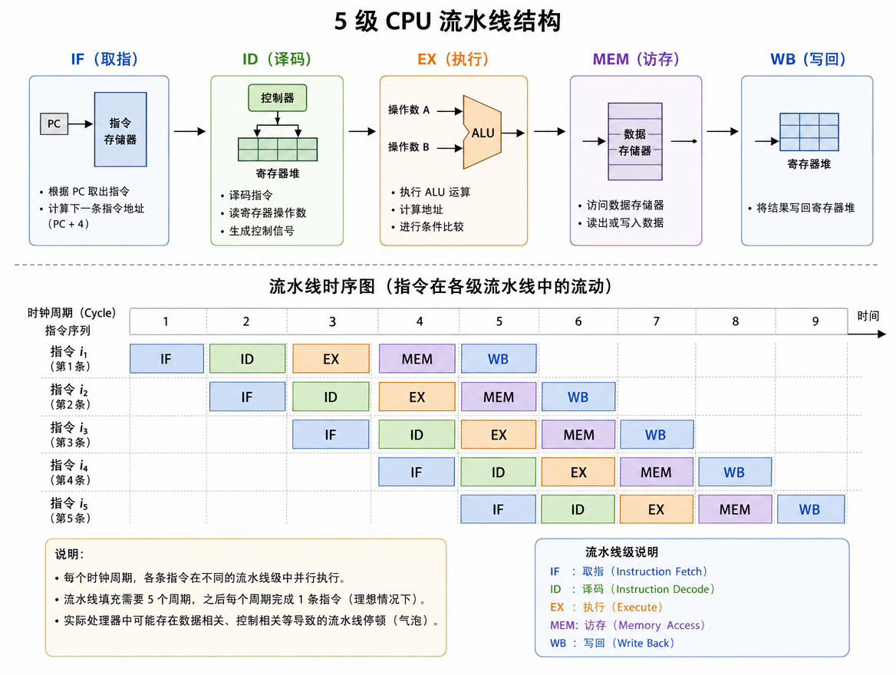
【分值占比】约 8~14 分
【考频】⭐⭐⭐⭐⭐（最高频，大题重灾区）
【必背】
- CPU的功能与结构：运算器、控制器
- 指令执行过程：取指、译码、执行、访存、写回
- 数据通路：总线方式、专用通路
- 控制器：硬布线控制器 vs 微程序控制器
- 微程序控制器：微指令格式、微地址形成
- 指令流水线：流水线的分类、冒险（冲突）及处理
- 流水线性能计算：吞吐率、加速比、效率
- 异常与中断：内中断/外中断的分类与处理时机
- 多处理器基本概念：Flynn 分类、多核、硬件多线程
【核心概念】
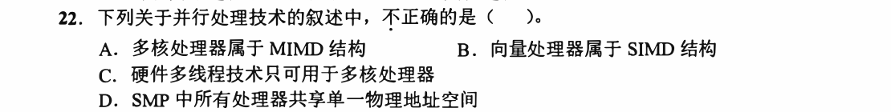
5.1 CPU的功能与结构
CPU功能： - 指令控制（程序顺序控制） - 操作控制（产生操作信号） - 时间控制（时序管理） - 数据加工（算术逻辑运算） - 中断处理
运算器组成： - ALU - 累加器ACC - 乘商寄存器MQ - 操作数寄存器X - 程序状态字寄存器PSW
控制器组成： - 程序计数器PC - 指令寄存器IR - 指令译码器 - 时序系统 - 微操作信号发生器
5.2 指令执行过程
指令周期：CPU取出并执行一条指令所需的全部时间。
机器周期（CPU周期）：指令执行中每步操作所需的时间，通常以访存时间作为基准。
时钟周期：CPU操作的最基本单位。
关系：一个指令周期 = 若干个机器周期 = 若干个时钟周期
指令执行阶段： 1. 取指周期：PC → MAR → 读存储器 → MDR → IR，PC + 1 2. 间址周期（间接寻址时）：取有效地址 3. 执行周期：执行具体操作 4. 中断周期（中断发生时）：保存断点，转中断处理
5.3 数据通路
数据通路：数据在功能部件之间传送的路径。
总线方式（指 CPU 内部总线，即 ALU 与各寄存器之间的数据通路组数）： - 单总线：所有部件共享一组内部总线，同一时刻只允许一对部件传送，结构简单、成本低，但存在总线冲突，需要暂存器（Y、Z）配合分时使用。 - 双总线：设置两组内部总线，可同时进行两路数据传送（如两个源操作数同时送 ALU），速度加快。 - 三总线：设置三组内部总线，两个源操作数与运算结果可同时走各自通路，速度最快，硬件最复杂。
⚠️ 易错警示：这里的"单/双/三总线"是 CPU 内部 ALU 与寄存器之间的通路组数，与系统总线按信息类型分为数据总线、地址总线、控制总线是两回事，切勿混淆。
专用通路：在各部件之间建立专用数据通路，可并行传送、速度快，但硬件复杂、成本高。
【例】（数据通路微操作序列）某机采用 CPU 内部单总线结构，ALU 一个输入端接暂存器 Y，输出经暂存器 Z 送回总线。写出指令 ADD (R1), R2（源操作数为寄存器间接寻址，功能：$((R1)) + (R2) \to R2$）从取指到执行各节拍的微操作及控制信号。
解答要点：
| 阶段 | 微操作 | 有效控制信号 |
|---|---|---|
| 取指 | (PC) → MAR | PCout，MARin |
| 取指 | M(MAR) → MDR，(PC)+1 → PC | CU 发读命令（1→R），MDRin；PC 自动加 1 |
| 取指 | MDR → IR | MDRout，IRin |
| 执行 | (R1) → MAR | R1out，MARin |
| 执行 | M(MAR) → MDR | CU 发读命令，MDRin |
| 执行 | MDR → Y | MDRout，Yin |
| 执行 | (Y) + (R2) → Z | R2out，ALU 加控制信号，Zin |
| 执行 | (Z) → R2 | Zout，R2in |
💡 技巧：单总线一拍只能传一路数据，所以 ALU 运算前必须先把一个操作数锁存进 Y，结果先经 Z 缓冲再写回；"访存取操作数"与"ALU 运算"必须分拍。
5.4 控制器
硬布线控制器： - 用组合逻辑电路直接产生控制信号 - 速度快，适合RISC - 设计复杂，不灵活
微程序控制器： - 将每条指令的执行转化为一段微程序 - 用控制存储器（CM）存储微指令 - 设计简单，易修改，适合CISC - 速度相对慢
微程序控制器核心部件： - 控制存储器（CM）：存放微程序，ROM实现 - 微指令寄存器（μIR）：存放当前微指令 - 微地址形成电路：形成下一条微地址
微命令与微操作辨析：微命令是控制部件向执行部件发出的控制信号（如 PCout、MARin），是控制序列的最小单位；微操作是执行部件在微命令作用下完成的最基本操作。二者一一对应：微命令是"令"，微操作是"行"。按能否同时发出，微命令分为相容（可同拍发出）与互斥（不可同拍发出，如各种读/写同一总线的信号）。
微指令格式： - 水平型微指令：并行度高，微指令长 - 垂直型微指令：类似机器指令，短但并行度低
微命令编码方式： - 直接编码：每位对应一个微命令，简单但字长 - 字段直接编码：互斥微命令放同一字段，加译码 - 字段间接编码：一个字段含义受另一字段控制
字段直接编码的位数计算：把一组 $n$ 个互斥微命令编入同一字段，字段还需表示"本拍不发出任何微命令"的空操作状态，故需 $n+1$ 种编码，字段位数为 $\lceil \log_2(n+1) \rceil$。
【例】某微指令的操作控制字段采用字段直接编码法，分为 3 个字段，各字段分别含 7、8、15 个互斥微命令。问操作控制字段至少需多少位？
解答要点：$\lceil \log_2(7+1) \rceil = 3$ 位，$\lceil \log_2(8+1) \rceil = 4$ 位，$\lceil \log_2(15+1) \rceil = 4$ 位，合计 $3+4+4=11$ 位。（若用直接编码则需 $7+8+15=30$ 位，可见字段编码大幅缩短微指令字长。）
⚠️ 易错警示：$\log_2$ 里一定是 $n+1$（多算一个"不操作"状态），且各字段分别计算后相加，不能把所有微命令加起来一起算。
微地址形成： - 由机器指令操作码形成入口地址 - 由微指令下地址字段指出 - 由标志位决定分支
操作码 → 微程序入口映射：每条机器指令对应控存中一段微程序，入口地址由 IR 中的操作码经映射逻辑（MAP ROM / 映射硬件）形成。若约定每条指令的微程序固定占 $2^m$ 个控存单元，可直接用"操作码低位补 $m$ 个 0"（即操作码 $\times 2^m$）得到入口地址。
控存容量计算：控存容量 = 控存单元数（微指令条数）× 微指令字长。
【例】某机微指令字长 32 位，控存最多存放 512 条微指令；系统有 80 条机器指令，每条指令的微程序平均由 4 条微指令构成，公共取指微程序 2 条。问：(1) 控存容量多大？(2) 容量是否够用？
解答要点：(1) 控存容量 $= 512 \times 32\text{ 位} = 16\text{K 位} = 2\text{KB}$；(2) 需要存放 $80 \times 4 + 2 = 322$ 条微指令，$322 < 512$，够用（控存单元数一般按 2 的幂取整）。
5.5 指令流水线
流水线基本原理：将指令执行分成多个阶段，多条指令重叠执行。
经典五段流水线： 1. IF：取指令（Instruction Fetch） 2. ID：指令译码/读寄存器（Instruction Decode） 3. EX：执行/计算有效地址（Execute） 4. MEM：访存（Memory Access） 5. WB：写回寄存器（Write Back）
时空图：横轴为时间（时钟周期），纵轴为流水段（或各条指令），每个方格表示某条指令在某节拍占用某一流水段。由时空图可直观数出：$n$ 条指令在 $k$ 段流水线上共需 $k+(n-1)$ 个时钟周期（第一条指令用 $k$ 拍充满流水线，之后每拍出一条结果）。
流水线性能指标：
吞吐率（TP）：单位时间内完成的任务数。 - 最大吞吐率：$TP_{max} = \frac{1}{\Delta t}$（理想情况） - 实际吞吐率：$TP = \frac{n}{k\Delta t + (n-1)\Delta t} = \frac{n}{(k+n-1)\Delta t}$
加速比（S）： $$S = \frac{T_{非流水}}{T_{流水}} = \frac{n \cdot k \cdot \Delta t}{(k+n-1)\Delta t} = \frac{nk}{k+n-1}$$
效率（E）： $$E = \frac{S}{k} = \frac{n}{k+n-1}$$
流水线冒险（冲突）：
- 结构冒险（资源冲突）：多条指令争用同一硬件资源
-
解决：资源重复、流水线气泡、停顿
-
数据冒险（数据相关）：指令需要用到前面指令的结果
- RAW（写后读）：最常见，如
ADD R1, R2, R3后SUB R4, R1, R5 - WAR（读后写）：由乱序执行引起
- WAW（写后写）：由乱序执行引起
- 解决：数据转发（旁路）、插入气泡、编译器调度
-
load-use 冒险：
LOAD指令的数据要到 MEM 段结束才得到，紧随其后的指令在 EX 段就需要该数据，仅靠转发来不及，必须插入 1 个停顿周期（气泡）再转发。如LW R1, 0(R2)后紧跟ADD R3, R1, R4，即使采用转发技术也要停顿 1 拍。 -
控制冒险（控制相关）：分支指令改变执行顺序
- 解决：预测分支（静态/动态）、延迟分支、刷新流水线
- 1 位动态预测器：记录该分支上次是否跳转，上次跳则预测跳。循环最后一次和重新进入时各误判一次（每轮循环误 2 次）。
- 2 位饱和计数器预测器：用 00/01/10/11 四个状态，预测方向须连续两次预测失败才翻转，对循环分支每轮只误 1 次，优于 1 位预测器。
超标量流水线：每个时钟周期发射多条指令。 超流水线：将流水段进一步细分，提高主频。 超长指令字（VLIW）：编译器静态调度并行指令。
5.6 多处理器基本概念与异常中断
Flynn 分类法（按指令流与数据流的并行性）：
| 类型 | 含义 | 典型代表 |
|---|---|---|
| SISD | 单指令流单数据流 | 传统单处理器计算机 |
| SIMD | 单指令流多数据流 | 阵列处理机、向量机、GPU |
| MISD | 多指令流单数据流 | 无实际产品（理论上存在） |
| MIMD | 多指令流多数据流 | 多处理器系统、多核处理器 |
- 多核处理器：一个芯片内集成多个处理核心，各核心有自己的控制器与运算器（一级 Cache 私有、末级 Cache 共享），属 MIMD；操作系统按"多处理器"方式调度。
- 硬件多线程：用硬件在一个核内维护多套线程上下文（PC、寄存器堆），快速切换隐藏停顿：
- 细粒度多线程：每个时钟周期切换一次线程；
- 粗粒度多线程：遇到长停顿事件（如 Cache 失效）才切换；
- 同时多线程（SMT）：利用超标量处理器的空余发射槽，同一拍内发射来自多个线程的指令（如 Intel 超线程 Hyper-Threading）。
异常与中断： - 异常（内中断）：由 CPU 内部执行的指令引起，与当前指令同步： - 故障（Fault）：可纠正，处理后回到原指令重执行（如缺页、缺段）； - 陷阱（Trap / 自陷）：有意安排的陷入，处理后执行下一条指令（如系统调用、断点调试）； - 终止（Abort）：不可恢复的严重错误，直接终止进程（如控制器硬件故障）。 - 中断（外中断）：由 CPU 外部硬件设备（I/O 设备、时钟）发出的请求引起，与当前指令异步；CPU 在每条指令执行结束（指令周期末尾）统一查询并响应，响应后进入中断周期：保存断点与现场 → 转中断服务程序 → 恢复现场返回。 - 处理时机对比：异常在指令执行过程中即被发现处理；外中断只能在指令之间被响应。
🔑 口诀：内同步、外异步；故障重执行，陷阱走下条，终止没得救。
【易错警示】
- ⚠️ 取指周期中PC + 1的"1"是指令字长（一条指令占的存储单元数），不是1个字节
- ⚠️ 硬布线控制器速度快但难修改，微程序控制器相反
- ⚠️ 控制存储器（CM）是ROM，对用户透明，存放微程序
- ⚠️ 数据冒险中RAW是最常见的，转发可以解决大部分RAW，但load-use冒险转发后仍需停顿1拍
- ⚠️ 流水线加速比有上限，理想情况下最大为流水段数k
- ⚠️ 分支预测错误会导致流水线刷新，损失多个周期
- ⚠️ 超流水线是增加流水段数，超标量是增加发射宽度，两者可同时使用
- ⚠️ 单/双/三总线指CPU内部ALU与寄存器间的通路组数，不是数据/地址/控制三类系统总线
【真题速查】
| 年份 | 题号 | 考点 |
|---|---|---|
| 2024 | 17, 18, 43/44 | 数据通路、微程序、CPU大题 |
| 2023 | 17, 18, 43/44 | 流水线冒险、控制器、CPU大题 |
| 2022 | 17, 18, 43/44 | 流水线性能、数据通路、CPU大题 |
| 2021 | 17, 18, 43/44 | 微程序控制器、流水线、CPU大题 |
| 2020 | 17, 18, 43/44 | 流水线冒险、硬布线、CPU大题 |
| 2019 | 17, 18, 43/44 | 指令周期、流水线、CPU大题 |
逐题真题：先阅读上方知识点，再按年份展开下列原题；每道题均已对应本章节知识点。
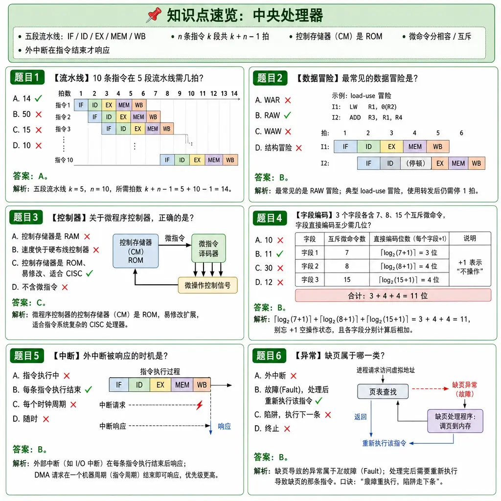
（考点归类供参考，具体题号以历年原卷为准；408 大题中 43、44 题为计算机组成原理，45 题为操作系统）
第6章 总线
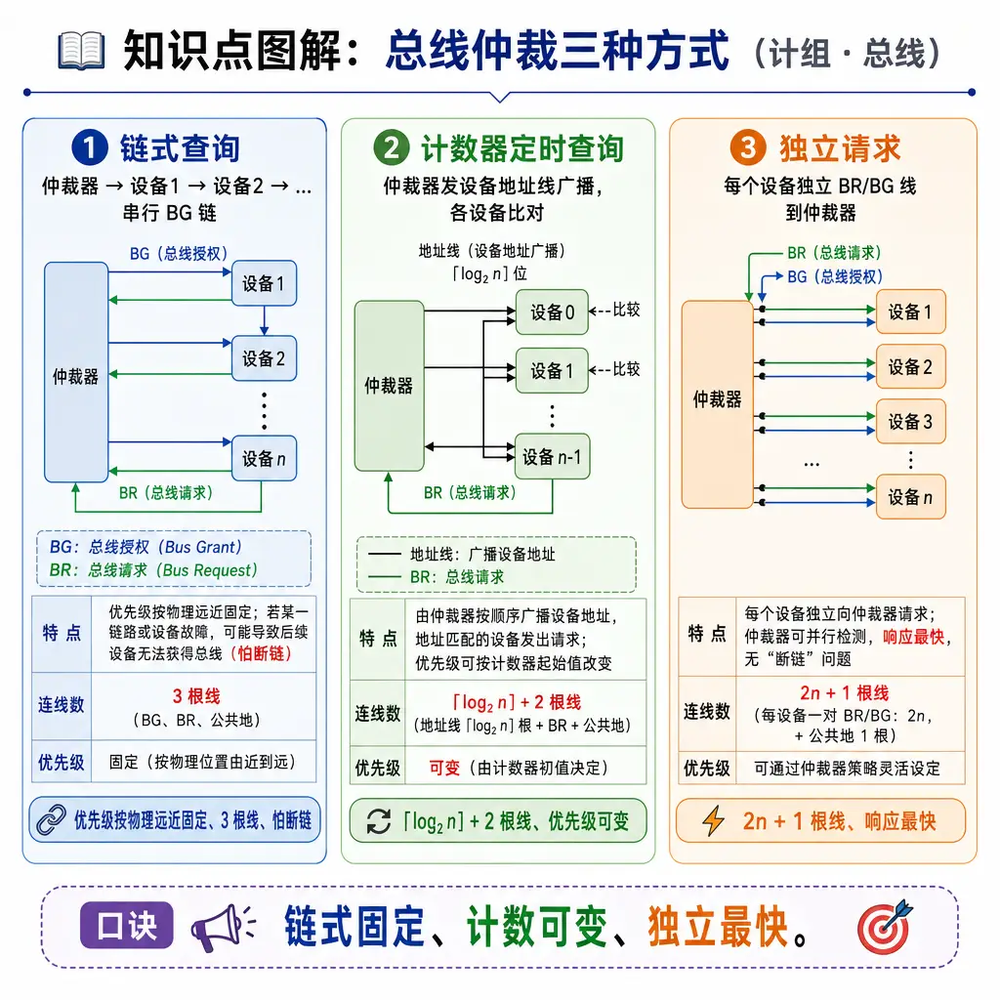
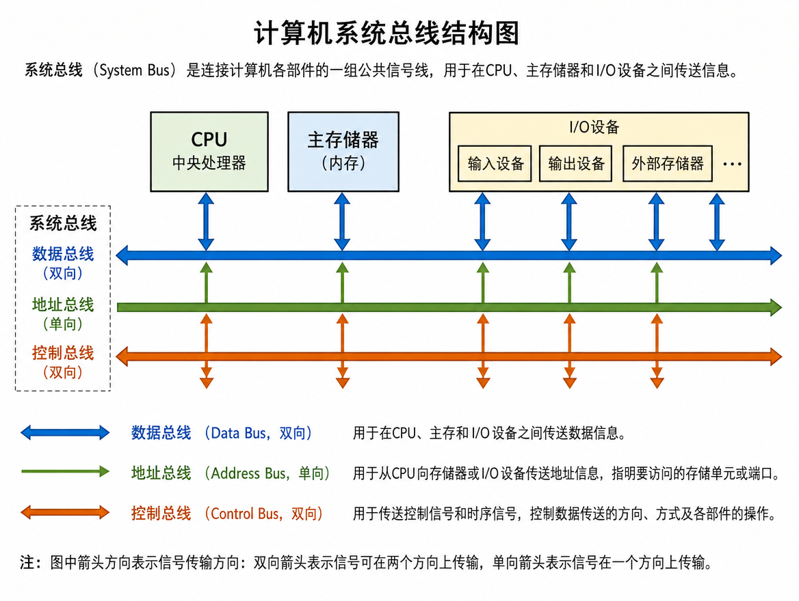
【分值占比】 约 4~6 分
【考频】 ⭐⭐⭐（中等频率，概念题为主）
【必背】 - 总线的分类：片内总线、系统总线、通信总线 - 总线性能指标：总线宽度、总线带宽、总线复用、信号线数等 - 总线仲裁方式：集中式（链式查询、计数器定时查询、独立请求）vs 分布式 - 总线定时方式：同步通信、异步通信（不互锁、半互锁、全互锁） - 总线带宽计算公式
【核心概念】
6.1 总线的基本概念
总线：一组能为多个部件分时共享的公共信息传送线路。
总线的特性： - 机械特性：物理连接方式（插头插座形状、尺寸、引脚数目等） - 电气特性：信号传输方向、电平范围 - 功能特性：每根传输线的功能 - 时间特性：信号之间的时序关系
6.2 总线的分类
| 分类依据 | 类型 | 说明 |
|---|---|---|
| 按数据格式 | 并行总线 | 多条数据线同时传输，速度快，适合短距离 |
| 串行总线 | 一条数据线逐位传输，适合长距离 | |
| 按功能层次 | 片内总线 | CPU芯片内部寄存器与ALU之间的连线 |
| 系统总线 | 计算机系统内各功能部件（CPU、主存、I/O接口）之间 | |
| 通信总线 | 计算机系统之间或计算机与外部设备之间的通信 |
系统总线按传输信息的不同分为三类： - 数据总线（DB）：双向传输，宽度与机器字长、存储字长有关 - 地址总线（AB）：单向传输（CPU发出），宽度与主存地址空间大小有关 - 控制总线（CB）：传输控制信号，有出有入
结论：数据总线宽度 = 机器字长（通常）；地址总线宽度决定寻址空间大小（如32位地址线 → $2^{32}$ = 4GB寻址空间）
通信总线： - 串行通信：USB、SATA、PCIe（物理层串行） - 并行通信：PCI（传统）、IEEE 1284
6.3 总线的性能指标
| 性能指标 | 定义 | 公式/说明 |
|---|---|---|
| 总线宽度 | 数据总线的位数 | 通常等于机器字长 |
| 总线带宽 | 单位时间内总线上可传输的数据量 | $\text{带宽} = \frac{\text{总线宽度}}{8} \times \text{总线频率}$（字节/秒） |
| 总线工作频率 | 总线每秒传输的次数 | 与总线周期互为倒数 |
| 总线复用 | 一条信号线分时传送不同信号 | 如地址/数据复用，减少引脚数 |
| 信号线数 | 地址线、数据线、控制线的总和 | 反映总线复杂度 |
| 总线周期 | 一次总线操作所需的时间 | 通常由若干时钟周期组成 |
| 总线时钟频率 | 总线时钟信号的频率 | 决定总线工作速度 |
总线带宽计算公式： $$\text{总线带宽} = \frac{\text{总线宽度}}{8} \times \text{总线工作频率} \quad (B/s)$$
若采用总线复用或突发传输，需按实际数据传输方式计算： - 突发（Burst）传输：一次地址传输后连续传输多个数据块
结论：总线带宽 = 总线宽度 × 总线频率（位/秒）= 总线宽度/8 × 总线频率（字节/秒）
示例：某总线宽度64位，工作频率66MHz，则带宽 = 64/8 × 66M = 528 MB/s
【例】（突发传输带宽计算）某同步总线宽度 32 位，总线时钟频率 50MHz，采用突发传输：一次总线事务先用 1 个时钟周期传送地址和命令，随后连续传送 4 个数据，每个数据占 1 个时钟周期。求该总线的实际带宽。
解答要点：一次事务共占用 $1+4=5$ 个时钟周期，传送数据 $4\times\frac{32}{8}=16\,\text{B}$；事务耗时 $5\times\frac{1}{50\,\text{MHz}}=100\,\text{ns}$；实际带宽 $=\frac{16\,\text{B}}{100\,\text{ns}}=160\,\text{MB/s}$。
⚠️ 易错警示：突发传输的实际带宽 ≠ 总线宽度 × 时钟频率（本例峰值 200 MB/s），必须把地址周期等"非数据"周期计入总耗时。
6.4 总线仲裁
当多个主设备（如多个CPU或DMA控制器）同时请求使用总线时，需要仲裁机制决定哪个设备获得总线使用权。
集中式仲裁：由中央仲裁器统一控制
| 仲裁方式 | 原理 | 控制线数（n 为设备数） | 优点 | 缺点 |
|---|---|---|---|---|
| 链式查询（菊花链） | 仲裁器发出的总线同意信号BG依次串行经过各设备 | 3 根（BS、BR、BG） | 简单，易扩展 | 优先级固定，对电路故障敏感 |
| 计数器定时查询 | 仲裁器通过计数器输出设备地址，各设备比较 | $\lceil\log_2 n\rceil+2$ 根（设备地址线 + BS、BR） | 优先级可改变 | 控制较复杂 |
| 独立请求 | 每个设备有独立的BR和BG线 | $2n+1$ 根（n 条 BR、n 条 BG、1 条 BS） | 响应快，优先级灵活 | 控制线最多 |
💡 技巧：链式查询中设备优先级由其离仲裁器的物理远近决定，固定不变；计数器定时查询可由软件设定计数初值，优先级可改变；独立请求的优先级由仲裁器内部排队逻辑决定，响应最快、最灵活。
🔑 口诀："链式固定、计数可变、独立最快"；控制线数记 "3、⌈log₂n⌉+2、2n+1"。
分布式仲裁：不需要中央仲裁器，各设备有自己的仲裁号和仲裁器，通过比较仲裁号竞争总线。
6.5 总线操作和定时
总线传输周期：完成一次总线操作所需的时间，通常包括： 1. 申请分配阶段：主设备申请总线 2. 寻址阶段：主设备给出从设备地址 3. 传数阶段：数据交换 4. 结束阶段：撤销有关信号
同步定时方式： - 采用统一的时钟信号来同步数据传送 - 优点：控制简单，传输速率较高 - 缺点：各部件速度必须匹配，否则时钟频率受最慢部件限制
异步定时方式： - 不采用统一时钟，通过握手信号（请求/应答）协调 - 根据握手信号的交互方式分为三种：
| 方式 | 过程 | 特点 |
|---|---|---|
| 不互锁 | 主设备发出请求后，不等待应答，经过一段时间自动撤销请求；从设备发出的应答信号也是自行维持一段时间后自动撤销，双方不存在等待关系 | 速度快，可靠性差 |
| 半互锁 | 主设备必须等从设备的应答信号到来后才撤销请求；从设备经过一段时间自动撤销应答 | 可靠性提高 |
| 全互锁 | 主设备等应答后才撤销请求；从设备等请求撤销后才撤销应答 | 最可靠，速度最慢 |
结论：同步通信速度最快但灵活性差；异步通信全互锁最可靠但最慢；半互锁是折中方案。
6.6 常用总线标准
| 总线标准 | 类型 | 特点 |
|---|---|---|
| ISA | 系统总线 | 16位，已淘汰 |
| PCI | 系统总线 | 32/64位，并行，即插即用 |
| PCIe | 系统总线 | 串行点对点，_lane_概念，带宽可扩展 |
| AGP | 图形总线 | 专用于显卡，已淘汰 |
| USB | 通信总线 | 串行，热插拔，树形拓扑 |
| SATA | 通信总线 | 串行，专用于磁盘 |
⚠️ 易错警示 - ❌ 总线带宽计算时忘记除以8（把位当成字节） - ❌ 计数器定时查询的设备地址线数为 $\lceil\log_2 n\rceil$（向上取整），不是 $\log_2 n$ - ❌ 地址总线宽度决定寻址空间，数据总线宽度决定一次传输的数据量 - ❌ 同步总线的时钟频率由最慢设备决定 - ❌ 链式查询对电路故障最敏感（一个设备故障可能阻断后面的设备） - ❌ 半互锁方式可能导致请求信号长期有效（如果应答信号一直不来）
【真题速查】
| 年份 | 题号 | 考点 |
|---|---|---|
| 2024 | 19 | 总线带宽计算 |
| 2023 | 19 | 总线仲裁方式 |
| 2022 | 19 | 总线定时方式 |
| 2021 | 19 | 总线带宽计算 |
| 2020 | 19 | 总线复用 |
| 2019 | 19 | 总线性能指标 |
逐题真题：先阅读上方知识点，再按年份展开下列原题；每道题均已对应本章节知识点。
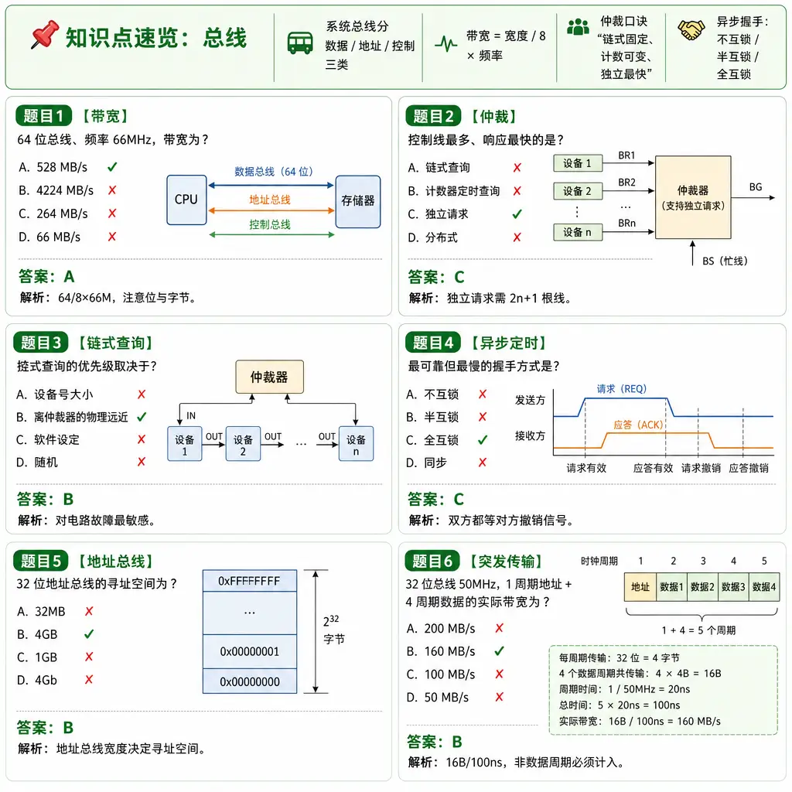
（考点归类供参考，具体题号以历年原卷为准）
第7章 输入输出系统
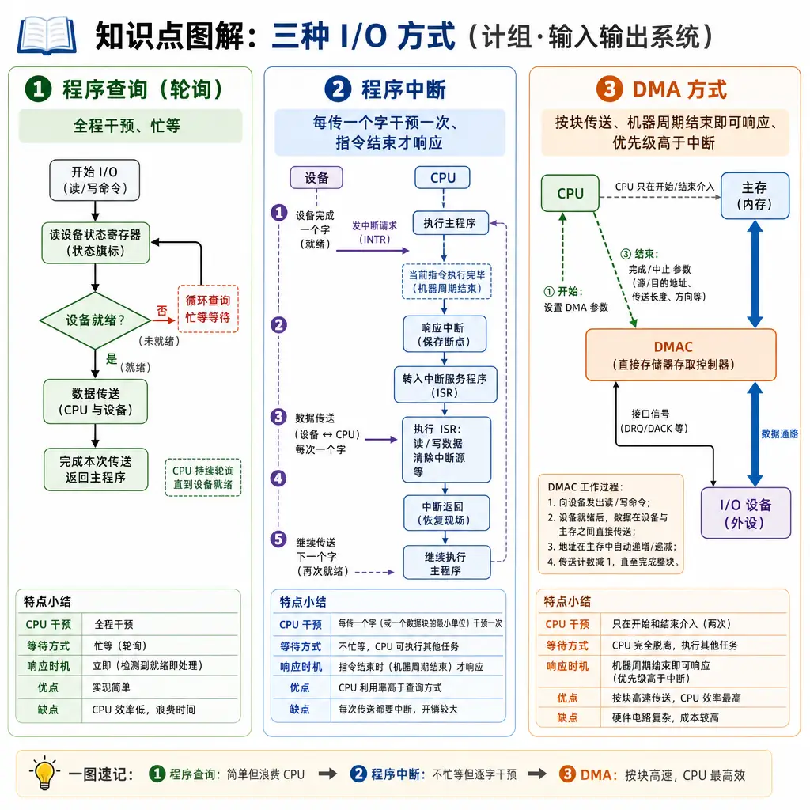
【分值占比】 约 6~10 分
【考频】 ⭐⭐⭐⭐（高频，中断和DMA是重点）
【必背】 - I/O接口的功能和基本结构 - I/O端口编址方式：统一编址 vs 独立编址 - I/O方式：程序查询、中断、DMA、通道 - 中断系统：中断响应过程、中断向量、多重中断 - DMA方式：DMA控制器结构、DMA传送过程 - 中断与DMA的区别（从CPU介入程度、响应时机等角度） - 中断和DMA时间占比的计算
【核心概念】
7.1 I/O系统的基本概念
I/O系统：由I/O设备、I/O接口、I/O控制方式及相应软件组成。
7.2 I/O接口
I/O接口（I/O控制器）：主机与I/O设备之间的交接界面，通过接口实现主机与设备之间的信息交换。
I/O接口的功能： 1. 选址功能：通过设备选择电路选中设备 2. 传送命令：接收并保存CPU发来的命令 3. 传送数据：缓冲数据，协调速度差异 4. 反映设备状态：忙、闲、出错等状态信号
I/O接口的基本结构：
┌──────────────────────────────────────────┐
│ I/O 接口 │
│ ┌──────────┐ │
│ │ 数据缓冲 │ ←→ 数据线 ──→ 设备 │
│ │ 寄存器 │ │
│ ├──────────┤ │
│ │状态/控制 │ ←→ 控制/状态线 ─→ 设备 │
│ │ 寄存器 │ │
│ └──────────┘ │
│ ↑ │
└────────────────────┼─────────────────────┘
↑
系统总线（连接 CPU / 主存）
7.3 I/O端口及其编址
I/O端口：接口中可被CPU直接访问的寄存器，分为： - 数据端口：读写数据 - 状态端口：反映设备状态（通常只读） - 控制端口：存放控制命令（通常只写）
I/O端口编址方式：
| 编址方式 | 统一编址（存储器映射） | 独立编址（I/O映射） |
|---|---|---|
| 原理 | I/O端口与存储器共享地址空间 | I/O端口有独立的地址空间 |
| 指令 | 使用访存指令访问I/O端口 | 需要专门的I/O指令（IN/OUT） |
| 地址范围 | 占用内存地址 | 不占用内存地址 |
| 优点 | 指令丰富，编程灵活 | 程序清晰，不占用内存空间 |
| 缺点 | 占用内存地址空间 | 指令少，编程受限 |
| 代表 | ARM、MIPS | x86 |
结论：408统考中x86架构采用独立编址，需要记住IN/OUT指令专用于I/O端口访问。
7.4 I/O方式
1. 程序查询方式 - CPU不断查询设备状态，直到设备就绪 - 优点：硬件简单 - 缺点：CPU效率极低，处于忙等状态
2. 程序中断方式 - 设备就绪后向CPU发中断请求 - CPU响应中断后执行中断服务程序完成数据传送 - 适合中低速设备（如键盘、打印机）
3. DMA方式（直接存储器访问） - DMA控制器直接在内存与I/O设备之间传送数据 - 无需CPU干预数据传送，只在开始和结束时需要CPU - 适合高速设备（如磁盘）
4. 通道方式 - 通道是专门的I/O处理机，有自己的指令系统 - 通道程序控制I/O操作，CPU只需发出启动命令 - 适合大型系统中大量I/O设备的管理
通道的类型（按数据传送方式分）：
| 通道类型 | 传送方式 | 适用设备 | 通道应满足的极限流量 |
|---|---|---|---|
| 字节多路通道 | 以字节为单位交叉传送，轮流为各设备服务 | 大量低速设备（终端、打印机等） | $f_{\max} \geq \sum_{i=1}^{n} f_i$ |
| 选择通道 | 独占式传送，一次为某台设备传完一整批数据后再换下一台 | 少量高速设备（磁盘等） | $f_{\max} \geq \max_{1\leq i\leq n} f_i$ |
| 数组多路通道 | 以数据块为单位交叉传送，结合前两者优点 | 多台中高速设备（磁盘等） | $f_{\max} \geq \max_{1\leq i\leq n} f_i$ |
其中 $f_i$ 为第 $i$ 台设备的数据传输率，$f_{\max}$ 为通道的极限流量（通道能力）。通道不超载的条件：字节多路通道的极限流量不小于所接各设备流量之和；选择通道与数组多路通道的极限流量不小于所接设备的最大流量。
【例】（通道流量计算）某字节多路通道连接 6 台设备，其数据传送速率分别为 5、10、15、20、25、30 KB/s，求通道的极限流量至少应为多少；若改用选择通道连接这些设备，极限流量又至少应为多少？
解答要点：字节多路通道 $f_{\max} \geq \sum f_i = 5+10+15+20+25+30 = 105$ KB/s；选择通道 $f_{\max} \geq \max f_i = 30$ KB/s。
🔑 口诀："字节求和、选择取大、数组（块交叉）也取大"。
| I/O方式 | CPU干预程度 | 数据传送单位 | 适用场景 |
|---|---|---|---|
| 程序查询 | 全程干预 | 字/字节 | 简单系统 |
| 中断 | 每传送完一个数据需干预 | 字/字节 | 中低速设备 |
| DMA | 仅在开始和结束时干预 | 数据块 | 高速设备 |
| 通道 | 最少，仅启动时干预 | 一组数据块 | 大量I/O设备 |
7.5 中断系统
CPU 响应中断的条件（需同时满足）： 1. 有中断请求：中断源已发出中断请求（中断请求触发器置 1） 2. 未被屏蔽：该中断源未被中断屏蔽字屏蔽 3. 开中断：CPU 处于允许中断状态（允许中断触发器 EINT = 1） 4. 一条指令执行完毕：CPU 仅在每条指令执行结束时查询中断请求（DMA 请求优先级更高，机器周期结束即可响应）
【例】（响应条件分析）主程序执行过程中某外设发出中断请求，CPU 却迟迟未响应。可能原因：① 该中断源被屏蔽字屏蔽；② CPU 处于关中断状态（如正在执行另一中断服务程序且尚未开中断）；③ 当前指令尚未执行完毕；④ 有 DMA 等更高优先级请求正在占用总线。
中断响应过程： 1. 中断请求：外设发出中断请求信号 2. 中断判优：多个中断源同时请求时确定优先级 3. 中断响应：CPU响应条件满足后，进入中断响应周期 4. 中断隐指令（硬件自动完成）： - 关中断（防止多重中断混乱） - 保存断点（PC值） - 引出中断服务程序（找到入口地址） 5. 执行中断服务程序：保护现场、处理中断、恢复现场、开中断、中断返回
中断向量：中断服务程序的入口地址。 - 向量中断：由硬件直接产生向量地址，进而找到入口地址 - 非向量中断：由软件查询中断源，再找到入口地址
中断判优：多个中断源同时提出请求时，确定优先响应谁。 - 硬件判优：用硬件排队器电路实现，响应速度快，但优先级固定后难以更改 - 软件判优（软件查询）：按程序查询的顺序确定优先级，先查询者优先级高；灵活易改，但响应速度慢
💡 技巧：注意区分"响应优先级"与"处理优先级"——硬件排队器决定谁先被响应；中断屏蔽字可以改变实际的处理（完成）顺序，二者可以不一致，这是 408 的经典考法。
多重中断（中断嵌套）： - 中断服务程序执行过程中响应更高级中断请求 - 实现条件：中断服务程序中必须开中断（通常在中断处理完成后） - 中断屏蔽字：用中断屏蔽寄存器控制各中断源的屏蔽状态
中断屏蔽字： - 每个中断源对应一个屏蔽字（各位表示对其他中断源的屏蔽） - 1表示屏蔽，0表示允许 - 处理优先级越高的中断源，其屏蔽字中 1 的个数越多；处理优先级最高者屏蔽字为全 1，最低者仅自身位为 1
【例】（屏蔽字改变处理优先级）某机有 A、B、C、D 四级中断，硬件响应优先级为 A > B > C > D。现要求将中断处理顺序改为 C > D > A > B。（1）写出各级中断服务程序应设置的屏蔽字；（2）若四级中断同时请求，说明中断嵌套过程。
解答要点：
（1）某级中断的屏蔽字中，对"处理优先级不高于本级"的所有中断源（含本级）置 1（位序按 A、B、C、D）：
| 中断源 | 处理优先级 | 屏蔽字 |
|---|---|---|
| A | 第三 | 1100 |
| B | 最低 | 0100 |
| C | 最高 | 1111 |
| D | 第二 | 1101 |
（2）四级中断同时请求时的嵌套过程（时序）：
| 时刻 | 事件 |
|---|---|
| ① | 硬件判优先响应 A，A 的服务程序设置屏蔽字 1100 |
| ② | 待处理的 B、C、D 中 C、D 未被屏蔽，且 C 硬件优先于 D → C 打断 A |
| ③ | C 的屏蔽字为全 1，不被打断，C 执行完毕，返回 A |
| ④ | A 恢复执行，此时 D 未被屏蔽 → D 打断 A |
| ⑤ | D 执行完毕返回 A，A 执行完毕返回主程序 |
| ⑥ | 响应 B，B 执行完毕，返回主程序 |
实际处理（完成）顺序为 C → D → A → B，与要求一致。
⚠️ 易错警示：硬件响应优先级由排队器决定，不能被屏蔽字改变；屏蔽字改变的是"是否允许嵌套"，从而改变处理完成顺序。
7.6 DMA方式
DMA控制器（DMAC）的结构： - 主存地址计数器：存放要访问的主存单元地址 - 字计数器：记录传送数据块的长度 - 数据缓冲寄存器：暂存每次传送的数据 - DMA请求触发器：接收设备的DMA请求 - 控制/状态逻辑：管理DMA操作 - 中断机构：数据块传送完毕后向CPU发中断
DMA传送过程： 1. 预处理（CPU完成）： - 测试设备状态 - 向DMAC送入主存起始地址、传送字数等 - 启动设备
- 数据传送（DMAC控制）：
- 设备准备好一个字/字节，向DMAC发DMA请求
- DMAC向CPU发总线请求（HOLD）
- CPU响应（HLDA），释放总线控制权
- DMAC控制总线，在主存与设备之间传送数据
-
重复直到数据块传送完毕
-
后处理（CPU响应中断完成）：
- DMAC向CPU发中断请求
- CPU执行中断服务程序，进行校验等后处理工作
DMA的传送方式： - 停止CPU访存：DMA传输期间CPU完全放弃总线 - 周期挪用（周期窃取）：CPU空闲时访存，冲突时DMA优先挪用一个周期 - DMA与CPU交替访存：将CPU周期分为两半，一半供CPU访存、一半供DMA访存，分时工作。适用条件：当 CPU 工作周期 ≥ 2 倍主存存取周期时采用，此时 DMA 与 CPU 访存互不冲突，不需要总线使用权的申请、建立和归还过程，DMA 传送对 CPU 完全透明，效率最高
结论：周期挪用最常用，兼顾CPU效率和DMA效率。
7.7 中断 vs DMA 对比
| 对比项 | 程序中断 | DMA |
|---|---|---|
| 数据通路 | 设备 → CPU → 主存 | 设备 ↔ 主存（不经过CPU） |
| 响应时机 | 每条指令执行结束 | 每个机器周期结束 |
| CPU干预 | 每传送一个数据都需CPU干预 | 只在开始和结束时干预 |
| 异常处理 | 能处理异常事件 | 仅传送数据 |
| 优先级 | 低 | 高 |
| 适用场景 | 中低速设备、随机事件 | 高速设备、成批数据传送 |
| 传送单位 | 字/字节 | 数据块 |
7.8 真题常考：中断和DMA的时间占比计算
问题类型：计算I/O操作占用CPU时间的比例。以下公式均按设备全速传输计（即设备满负荷、始终以传输率 $f$ 工作）；若设备非满负荷，需按实际传输率折算。
程序查询方式的时间占比： - 假设设备数据传输率为 $f$（字/秒） - 每传送一个字（含查询与传送操作）需要CPU时间 $t$（秒） - 则CPU用于I/O的时间占比 = $f \times t \times 100\%$
中断方式的时间占比： - 假设设备数据传输率为 $f$（字/秒） - 每传送一个字需要CPU中断处理的时间为 $t$（秒） - 则CPU用于I/O的时间占比 = $f \times t \times 100\%$
DMA方式的时间占比： - 假设设备传输数据块大小为 $N$ 字，传输率为 $f$ 字/秒 - 每块DMA预处理+后处理需要CPU时间 $t$（秒） - 每秒传输的块数 = $f / N$ - CPU时间占比 = $\frac{f}{N} \times t \times 100\%$
【例】（中断方式占比）某设备传输率为0.5MB/s，每次中断传送4字节，中断服务程序需100个时钟周期，CPU主频50MHz（按设备全速传输计）。 - 每秒中断次数 = 0.5M / 4 = 125000 次 - 每次中断耗时 = 100 / 50M = 2μs - 每秒用于中断的时间 = 125000 × 2μs = 0.25s - CPU时间占比 = 25%
【例】（程序查询方式占比）同上设备（传输率 0.5MB/s、每次传送 4B、主频 50MHz），若改用程序查询方式，每传送 4B 的查询与传送操作共需 400 个时钟周期（按设备全速传输计）。 - 每次传送耗时 = 400 / 50M = 8μs - 每秒传送次数 = 0.5M / 4 = 125000 次 - 每秒用于查询传送的时间 = 125000 × 8μs = 1s - CPU时间占比 = 100%，即 CPU 被该设备的 I/O 完全占用，无法执行其他程序
【例】（DMA方式占比）同上设备，改用 DMA 方式成组传送，每数据块 4KB，每块的预处理与后处理共需 500 个时钟周期（按设备全速传输计）。 - 每秒传送块数 = 512KB / 4KB = 128 块（0.5MB/s = 512 KB/s） - 每块占用CPU时间 = 500 / 50M = 10μs - 每秒用于DMA前/后处理的时间 = 128 × 10μs = 1.28ms - CPU时间占比 = 0.128%（传送期间周期挪用对 CPU 的影响另计，通常很小）
结论：同样的设备，DMA方式占用CPU时间远小于中断方式（通常不到1%），程序查询方式甚至可能占满CPU，因为DMA以块为单位，而查询/中断以字/字节为单位。
🔑 口诀："查询忙等、中断按字、DMA按块"——块越大，CPU 占比越小。
⚠️ 易错警示 - ❌ 中断响应是在一条指令执行结束后，DMA响应是在一个总线周期/机器周期结束后 - ❌ 响应中断的四个条件缺一不可；多重中断中被嵌套的服务程序必须先开中断，且请求方未被其屏蔽字屏蔽 - ❌ 中断服务程序中保存现场是软件（程序员）完成的，保存断点是硬件（中断隐指令）完成的 - ❌ 中断向量是中断服务程序入口地址，不是中断服务程序本身 - ❌ 多重中断需要开中断才能实现，进入中断时硬件自动关中断 - ❌ DMA传送期间CPU不能访存（停止CPU访存方式），但CPU仍可执行已在Cache/寄存器中的指令 - ❌ 周期挪用方式下，DMA和CPU不能同时访存，冲突时DMA优先
【真题速查】
| 年份 | 题号 | 考点 |
|---|---|---|
| 2024 | 20, 21 | 中断响应、DMA计算 |
| 2023 | 20, 21 | DMA方式、中断向量 |
| 2022 | 20, 21, 44 | 中断系统、I/O方式比较、I/O大题 |
| 2021 | 20, 21, 44 | DMA计算、中断嵌套、I/O大题 |
| 2020 | 20, 21, 44 | 中断方式、I/O接口、I/O大题 |
| 2019 | 20, 21, 44 | 程序查询、DMA、I/O大题 |
逐题真题：先阅读上方知识点，再按年份展开下列原题；每道题均已对应本章节知识点。
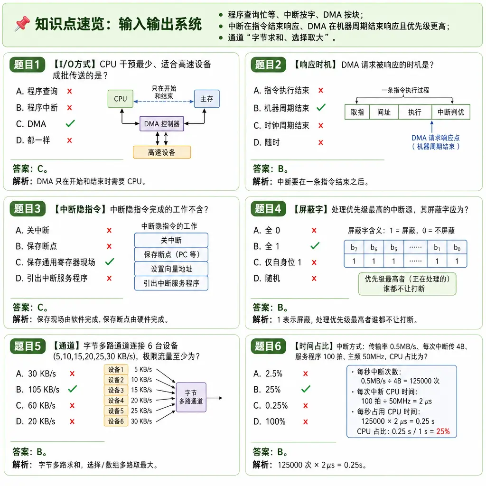
（考点归类供参考，具体题号以历年原卷为准）
常见问题
计组最容易丢分的点是什么？
三个高频坑：① Cache 地址划分（标记/行号/块内的位数计算）；② 补码与 IEEE 754 的转换细节；③ 中断与 DMA 的响应时机（中断在指令结束、DMA 在机器周期结束）。本页第 2、3、5、7 章的图解卡分别覆盖这三类问题。
内容依据：唐朔飞《计算机组成原理》与王道《计算机组成原理考研复习指导》；Cache、流水线等计算例题数据依据 2014—2024 年 408 统考真题。 全文由考研冲刺君团队整理核对，转载引用请注明来源（zehaowang.xin）。
最后更新：2026-07-29 · 考研冲刺君团队整理 · 内容持续维护